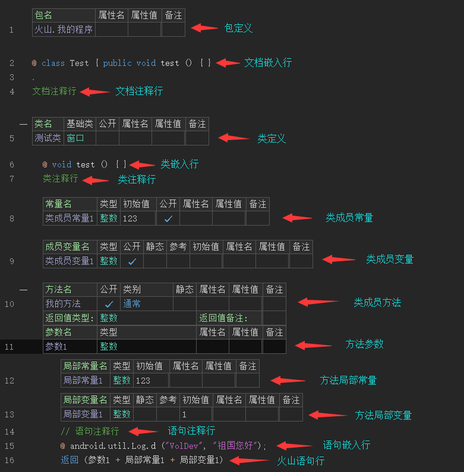
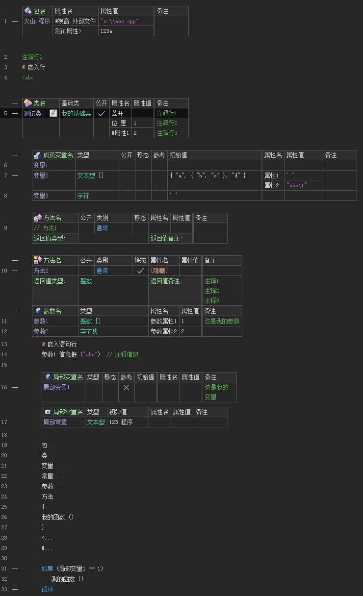
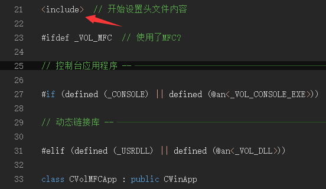
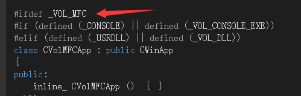
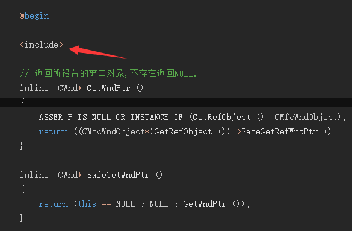
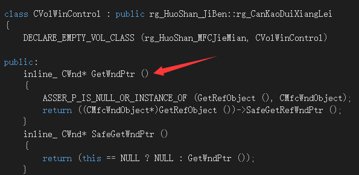
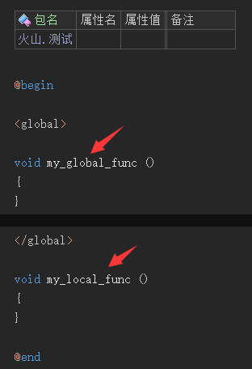
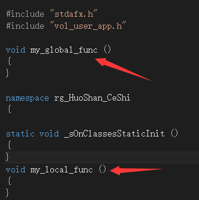

注意: 本手册内容普通用户无需掌握,示例如非明确说明均为基于安卓平台.
1. 火山平台基于面向对象的编程理念构造,支持类的封装、继承、多态,但是在此基础上进行了一些精简,以便能更好地学习和使用.
2. 火山平台将用户分为普通和封装用户两种.
普通用户为正常使用火山平台开发应用软件的用户;
封装用户则是可以自行使用火山程序扩展火山平台类库的用户.
为了屏蔽火山程序对特定目标环境的依赖，火山软件开发平台对每个目标环境提供了对应的封装类库，这种类库是使用火山程序本身进行封装的。
绝大多数情况下，用户不涉及到类库封装方面的工作，随系统附带的类库已经足够完成通常的应用开发需求。但如果用户觉得不够用或者有其它特别的要求，可以使用火山程序自行修改或扩展类库，此类用户被称为封装用户，所需要掌握的知识在本手册中讲述。学习类库封装的最好实际例子在系统类库，可以查看应用程序项目建立后自动添加进去的"模块"过滤器中的内容。
1. 名称:
火山平台中的名称分为以下这些:
1. 单名称:
单名称必须以英文字母/下划线字符/汉字字符开头,后面跟随英文字母/下划线字符/数字/汉字字符.如未特殊标注,本文档中所提出的所有"名称"均为单名称.
2. 全名称:
以句点字符组合在一起的单名称 称为全名称,如"火山.程序". 单名称可以被认为是全名称的一种(只包括一个单名称的全名称).
实际上,目前只有包名才使用到由多个单名称组成的全名称.
必须由两个或多个单词文本组成,首单词必须以英文字母/下划线字符开头,后续单词可以以英文字母/数字/下划线字符开头,单词之间使用句点字符分隔,单词中间的字符只能为英文字母/数字/下划线字符,最后一个单词固定为此标识符的当前版本号数值.
两个标识符,如果其名称部分相同且第一个标识符的版本号大于等于第二个标识符的版本号,则说明第一个标识符能够匹配第二个标识符.
如标识符"cplus.win32.console.1",说明其名称为"cplus.win32.console",版本号为1.
注意: 火山中的名称对英文字母的大小写敏感,譬如"abc","ABC"所指定的不是同一名称.
2. 立即数
立即数用作表达一个直接的字面数据值,有以下几类:
1. 数值立即数:
A. 十进制整数或小数,小数支持使用科学计数法.
B. 十六进制整数: "0x"后跟数字0-9或字母A-B(大小写无关). 如: 0x12AC3F
C. 字符整数值: 使用单引号括住的字符,如'A'.
如果欲强行指定数值的数据类型,可以使用"强制类型转换"操作符,譬如"(长整数)1",提供了一个数据类型为长整数的数值立即数.
如果某整数的数值超出了整数的最大有效范围,将自动被设定为长整数数据类型. 如: 0x123456789A 将被自动认为是长整数数据类型.
2. 逻辑型立即数: 为真/假.
3. 字符串立即数:
为用双引号括住的一段文本,文本内支持使用以下转义符:
转义符 解释 \b 退格符 \f 换页符 \r 回车符 \n 换行符 \t 水平制表符 \' 单引号 \" 双引号 \\ 反斜杠 \u 后跟1-4个十六进制字符,为所对应字符的Unicode代码值. \ 后跟1-3个八进制字符,为所对应字符的代码字节值. \x 后跟1-2个十六进制字符,为所对应字符的代码字节值. 如: "您好!\n祖国" 在"您好!"和"祖国"之间通过使用转义符插入了一个换行符.
注意: 在火山视窗平台里面,如果欲达到换行效果,需要插入"\r\n"回车和换行两个字符.
4. 数组立即数(只能在提供数组常量/变量初始值时使用):
为使用花括号括住的立即数的组合,如: { 1, 2 }, 多维数组可以嵌套,如: { { 1, 2 }, { 3, 4 } }
注意: 多维数组的各维成员数目必须相等,譬如如下格式的数组立即数是不允许的: { { 1, 2 }, { 3 } } ,因为其两个维的成员数目不相等.
3. 数据类型:
数据类型可以为以下两种:
A. 基本数据类型;
B. 用户程序中定义的类,称为类数据类型;
C. 数组数据类型
数组数据类型为基本或类数据类型后面跟随一个或多个数组维定义组成.
每个数组维定义由左右中括号("[]")组成,如果应用在变量定义上,可以同时在中括号内部加入具体成员数目,表示生成对应的数组变量实例. 如:
单维文本数组数据类型: 文本 []
多维整数数组数据类型: 整数 [] []
定义具有指定成员数目的整数数组变量: 整数 [3], 整数 [3][3]
一个火山程序的构成结构如下:
1. 包定义
1. 文档嵌入行
2. 文档注释行
3. 类定义
1. 类嵌入行
2. 类注释行
3. 类成员常量
4. 类成员变量
5. 类成员方法
1. 方法参数
2. 方法局部常量
3. 方法局部变量
4. 语句注释行
5. 语句嵌入行
6. 火山语句行
下面是一个火山程序的基本样图(天蓝色文字为说明):

1. 包定义:
包名为全名称,一个包内可以包含多个文档注释行/文档嵌入行/类定义.
包定义成员始终位于源文件的首部而且只能存在一个.
多个程序文件可以具有相同的包名,此时其中的内容被认为处于同一个包中.
2. 注释
可以使用以下方式定义火山程序中的注释:
A. 任何定义型成员其名称如果以连续两个'/'字符引导,说明其处于被注释状态,其以及其中的所有内容(包括直接/间接子成员)在编译时都将被忽略;
B. 在类外部的程序行,被称为文档注释行; 在类内部但是在类方法外部的程序行,被称为类注释行;
C. 在类方法内部可以使用连续两个'/'字符引导一段一直到行尾的语句注释文本.
文档注释行/类注释行/从行首开始的语句注释文本,其尾部如果以一个或多个减号/等号字符结束,IDE将自动在其后绘制对应长度的单/双分隔线.可以在IDE设置选项中将此机制关闭.
3. 嵌入行
文档或者方法程序行行首如果以一个独立的'@ '字符开头(与后面的内容必须用空白字符隔开),则被称为嵌入行,该嵌入行在编译时将被直接发送到目的平台编译器,由用户自身保证该行的语法正确性.
文档中可以使用"@begin"和"@end"关键字行括住一批程序行(注意 此方法不支持在类/方法中使用),这些程序行都将被视作嵌入行.
嵌入行中可以使用以下替换符引用外部火山名称:
格式 解释 样例 @<成员名称> 引用所指定的成员/参数名称. 注意: 为了避免重复替换产生错误,所有参数仅允许在嵌入行中引用一次,但是需求类型为"数据类型"的参数除外.
@<对象变量1>.test, @<对象变量1.成员1> @n<成员名称> 引用所指定的成员名称,与前面格式文本不同的是: 1. 本格式文本仅加入最后一个成员名称. 譬如"@n<对象变量1.成员1>"仅会加入最后的"成员1"的名称,而不会加入前面的所有中间名称;
2. 本格式文本引用成员时,不受静态成员访问格式限制. 譬如"@n<类1.成员1>",即使"成员1"不是常量/静态成员也可以被引用到;
3. 本格式文本引用成员时,不受访问权限的限制(譬如所访问成员是否公开等).
由于去除了这些限制,开发者必须谨慎使用此替换符,必须能够保证该替换符获得的名称在任何场合下均能正常工作.
@n<对象变量1.成员1> @dt<数据类型名称> 引用所指定的数据类型名称,包括: 基本数据类型/模板数据类型/类.
注意:1. 不支持数组数据类型;
2. 类数据类型是否使用全名称自动根据当前实际位置需要,可以通过在前方明确加上包名来强制组成全名称;
3. 如果本替换符后跟随的不是对象成员访问字符(譬如句点),别名类将使用其所封装的本地类名,常量类将使用其所对应的基本数据类型.
@dt<整数>, @dt<模板类型1>, @dt<类1>, @dt<包1.类1>.静态变量1 @fdt<数据类型名称> 与"@dt"基本相同,除了类数据类型始终使用全名称. @dtat_vcls<数据类型名称, 附加文本> 如果所指定类型名称为火山类/本地火山类数据类型,则在当前位置加入所指定的附加文本. 数据类型名称可以使用"@pdt"替换符引用指定参数数据的数据类型,附加文本中可以使用其它嵌入替换符,编译器会自动删除由于未满足条件加入附加文本而生成的空白嵌入行. 下同.
@dtat_ncls<数据类型名称, 附加文本> 如果所指定类型名称为本地类/本地结构数据类型,则在当前位置加入所指定的附加文本. @dtat_cls<数据类型名称, 附加文本> 如果所指定类型名称为所有类数据类型(火山类/本地火山类/本地类/本地结构),则在当前位置加入所指定的附加文本. @dtat_not_cls<数据类型名称, 附加文本> 如果所指定类型名称不为类数据类型(基本数据类型/本地整数基本类型/本地值类型/本地参考类型),则在当前位置加入所指定的附加文本. @pvpt<参数名称> 引用为指定参数所提供实际调用立即数或常量文本值的对应字面文本(去除两侧双引号) @pvpn<参数名称> 与"@pvpt"相同,只是要求所提供的字面文本为有效的英文名称文本. @pdt<参数名称> 引用为所指定参数提供的实际调用值数据类型,包括: 基本数据类型/类.
注意:1. 所获取名称文本不包括数组数据类型的维定义部分;
2. 如果本替换符后跟随的不是对象成员访问字符(譬如句点),别名类将使用其所封装的本地类名,常量类将使用其所对应的基本数据类型;
3. 类数据类型始终使用全名称;
4. 方法名称参数值使用统一的"vmethod".
@pdt2<参数名称> 同"@pdt"唯一的不同是,以下类数据类型始终使用统一的名称:
火山类数据类型: "vcls" 本地类(由别名类型指定,下同): "ncls" 本地结构: "nstruct" 本地整数基本类型: "nnum" 本地值类型: "nvalue" 本地参考类型: "nref" @pad<参数名称> 所指定名称数组参数的数组维数文本,如果不为数组,则为"0". @pdt_ch<参数名称> 引用为所指定参数提供的实际调用值数据类型的标识字符,包括: 基本数据类型/类. 数据类型的数组部分被忽略,常量类数据类型被转换到所对应的基本数据类型.
数据类型与标识字符的对应表(区分大小写):
字节: b 短整数: s 字符: c 整数: n 变整数: p 长整数: l 小数: f 逻辑值: B 文本型: S 火山类: C 方法名: M 本地类(由别名类型指定,下同): w 本地结构: W 本地整数基本类型: N 本地值类型: v 本地参考类型: r @pdt_list<参数名称> 引用从所指定参数开始到调用参数值表尾部所有参数值的实际数据类型列表(各数据类型之间使用逗号分隔),包括: 基本数据类型/类.
注意:1. 所获取名称文本不包括数组数据类型的维定义部分;
2. 如果本替换符后跟随的不是对象成员访问字符(譬如句点),别名类将使用其所封装的本地类名,常量类将使用其所对应的基本数据类型;
3. 类数据类型始终使用全名称;
4. 方法名称参数值使用统一的"func()"(本地目标语言为GO时)或"VOID_FUNC".
@pkg<包名称> 引用所指定的包名称 @pkg<火山.用户.程序> @an<约定名称> 引用所指定的全局/项目插件约定名称,其中全局约定名称由火山系统本身定义,插件约定名称由所使用的插件定义. @an<onInitAndroidActivity> @sn<特定名称> 引用所指定的特定名称,具体列表如下: 1. "current_class": 嵌入行当前调用位置所处类名(是否使用全名称自动根据当前实际位置需要,可以通过在前方明确加上包名来强制组成全名称). 所谓调用位置,为当调用该嵌入行所处嵌入式方法时,方法调用语句的所处位置;
2. "current_package": 嵌入行当前调用位置所处包名;
3. "current_method": 嵌入行当前调用位置所处方法名;
4. "base_class": 嵌入行当前调用位置所处类的基础类名(是否使用全名称自动根据当前实际位置需要,可以通过在前方明确加上包名来强制组成全名称);
5. "current_class_def": 嵌入行定义位置所处类名(是否使用全名称自动根据当前实际位置需要,可以通过在前方明确加上包名来强制组成全名称). 所谓定义位置,即定义该嵌入行的具体位置;
6. "current_package_def": 嵌入行定义位置所处包名;
7. "base_class_def": 嵌入行定义位置所处类的基础类名(是否使用全名称自动根据当前实际位置需要,可以通过在前方明确加上包名来强制组成全名称);
8. "startup_method": 程序启动方法名(启动方法必须位于启动类中)
9. "startup_class": 程序启动类名(是否使用全名称自动根据当前实际位置需要,可以通过在前方明确加上包名来强制组成全名称);
10. "startup_package": 程序启动类所处包的包名;
11. "this": 只能在非静态嵌入式方法中的嵌入行里使用,将被替换为调用该嵌入式方法时提供的调用对象;
12. "quot": 双引号字符;
13. "apos": 单引号字符;
14. "lt": 左尖括号字符;
15. "gt": 右尖括号字符;
16. "nbsp": 空格字符;
17. "pm_count": 为调用该嵌入式方法时所提供全部参数的数目;
18. "pm_types": 为调用该嵌入式方法时所提供的全部参数的实际调用值数据类型的标识字符串.字符串两侧使用双引号括住,数据类型的数组部分被忽略,常量类数据类型被转换到所对应的基本数据类型,每个参数调用值数据类型对应一个标识字符(区分大小写),具体数据类型与标识字符的对应表见"@pdt_ch"处:
如果参数调用值数据类型为类,可以通过其运行时类型信息来进行进一步判定其具体是什么类.
19. "rand_name0" 到 "rand_name9": 随机生成的程序内唯一性名称.
注意在同一条嵌入语句行或同一个嵌入式方法体中所有的嵌入语句行内,同一随机名称("rand_name0" 到 "rand_name9")将为同一名称文本.
譬如假设在一个嵌入式方法的方法体内存在以下语句内容:
for (int @sn<rand_name5> = 0; @sn<rand_name5> < 3; @sn<rand_name5>++)
其中"@sn<rand_name5>"所生成的随机名称在整个程序内为唯一性名称,但是在该嵌入式方法体内这三个位置处将为同一个名称文本.
20. "current_statment": 当前语句的位置字符串,格式: "<所处源文件名>, 所处源文件行号, 所处包名.所处类名, 所处方法名".
21. "current_source_file": 当前语句所处源文件名
22. "current_source_line": 当前语句在所处源文件中的行号位置
23. "current_source_package": 当前语句所处包名
24. "current_source_class": 当前语句所处类名
25. "current_source_method": 当前语句所处方法名
@sn<current_class> @sn<current_package>
@sn<base_class>
@sn<startup_method>
@sn<startup_class>
@sn<startup_package>
@sn<this>
@sn<quot>
@sn<apos>
@sn<pm_types>
@sn<rand_name>
@def_macro 定义可以在嵌入行中使用的宏,目前不支持在方法中定义. 语法格式为: 1. 不携带参数表方式:
@def_macro 宏名称 宏内容
在使用该宏时将直接使用宏内容对该宏进行替换.
如: @def_macro TEST wutao
使用该宏时,如 @m<TEST>,该宏替换后的实际内容将为 wutao .
2. 携带参数表方式:
@def_macro 宏名称(宏参数名称, ...) 宏内容
注意事项:
A. 参数表的左括号必须紧跟在宏名称后面,中间不能存在空白字符,不然就会被认为是宏内容的一部分;
如: @def_macro TEST(param1) param1
该宏的名称为TEST,具有一个名为param1的宏参数,宏内容是直接使用该参数.
如果左括号与TEST之间存在空白字符的话,如: @def_macro TEST (param1) param1
那么该宏就是一个名为TEST,没有参数,宏内容为"(param1) param1".
B. 参数表中可以包括一个或多个宏参数名称,多个参数名称之间使用逗号进行分隔;
如: @def_macro MY_ADD(param1, param2) param1 + param2
C. 宏内容中可以使用参数表内定义的宏参数名称,在使用该宏时将使用对应的实际参数内容进行替换;
D. 在宏内容中所使用的宏参数名称,如果其前方为1个'#'字符,该"#宏参数名"在进行宏替换时将被替换为字符串格式,即自动在两侧加上双引号;
如: @def_macro TEST(param1) #param1
使用该宏时,如 @m<TEST> (abc) ,该宏替换后的实际内容将为 "abc" ,注意abc两侧双引号也是替换后内容的一部分.
E. 在宏内容中所使用的宏参数名称,如果其前/后方为2个'#'字符,该宏参数名在进行宏替换时将自动与其前/后方内容连接起来.
如: @def_macro TEST(param1,param2) wutao_##param1##param2##_var
使用该宏时,如 @m<TEST> (abc,bcd) ,该宏替换后的实际内容将为 wutao_abcbcd_var ,前后文本将连接在一起.
F. 如果使用宏时所提供的实际参数数目超出当前所定义宏参数数目,则所有多余参数内容将被统一视为最后一个宏参数的替换内容.
如: @def_macro TEST(param1) param1
使用该宏时如果提供了多余的参数,如 @m<TEST> (abc, bcd) ,则最终得到的替换结果就是 abc, bcd ,而不会报错.
此特性是为了支持将目标语言的复杂代码文本指定为宏的最后一个参数的内容,如:
@m<TEST> (myObject.myMethod (1, 2, 3)) ,最终得到的替换结果就是 myObject.myMethod (1, 2, 3) .
3. 多行宏内容:
如果宏内容包括多行,可以在当前行的尾部使用'\'字符标记其紧接着的下一嵌入行也属于本宏的内容.如果当前行的尾部为双引号,而且下一行的首部也为双引号,则这两个字符串将合并到一起.
如:
@def_macro TEST wutao \
volcano \
dev使用该宏时所最后得到的替换结果为:
wutao
volcano
dev再如:
@def_macro TEST "wutao " \
"volcano"使用该宏时所最后得到的替换结果为:
"wutao volcano"
4. 宏内容中可以使用本表中列出的除开宏定义本身以外的所有其它替换符,包括使用其它宏.
@m<宏名称> (参数表) 使用所指定名称的宏,可以在后方跟随一个参数表(注意此处不再限制左括号与其前方不能留空白字符),参数表中的所有参数用作替换对应的宏参数. 注意:
1. 如果所欲使用的宏在类中定义,并且当前使用位置不位于该类中,则必须在宏名称前加上类名前缀;
2. 如果所使用宏未指定类名前缀,且其当前使用位置所处类及程序全局中均定义有该名称的宏,则将使用类中定义的宏;
3. 可以跨越多行提供宏参数表. 如:
@m<TEST> ("wutao",
"volcano")使用格式:
1. 不携带参数表方式:
如: @m<TEST>
2. 携带参数表方式:
如: @m<TEST> ("wutao", "volcano")
注意如前所述,如果所提供的实际参数数目大于所使用宏中定义的宏参数数目,则所有多余部分将被视为宏的最后一个参数的内容.
替换符中可以提供一个使用逗号分隔的选项参数字符集合,其格式为: @xx<替换名称, 选项参数字符集文本>
目前有效的选项字符有:
选项字符 说明 n
指定使用相关成员的纯粹名称. 1. 当本地语言为GO时,火山编译器会将所有类对应的数据类型编译为GO的参考格式,即"类1"所对应的GO数据类型为星号字符加"类1"的实际输出名,此即为类似"@dt<类1>"替换符的替换文本. 当在某种情况下不需要这个星号时,就可以通过"@dt<类1, n>"格式来去掉此星号;
2. 当本地语言为C++时,如果数据类型尾部以星号('*')字符结束,则将其去除; 首部以"P" / "P_" / "LP" / "LP_"文本开头,亦将其去除. 前者优先.
e 指定当未找到所指定名称的成员时,是否不报告编译错误(此时其所处嵌入行将被整体全部删除). 如,以下嵌入行:
@n<启动类._调试启动方法, e> ();
当"启动类"存在"_调试启动方法"时,将正常输出对应嵌入行内容,当不存在时,将删除整个嵌入行.
本选项字符可以结合 "@dt", "@fdt", "@pkg", "@an", "@n"及直接的"@<成员名称>"替换符使用.
b 指定当找到所指定名称的成员时,将其替换为一个逻辑值真文本,未找到则替换为一个逻辑值假文本. 如以下嵌入行: #if @n<启动类.方法1, b>
当"启动类"存在"方法1"时,所输出嵌入行内容为"#if TRUE",当不存在时,所输出内容为"#if FALSE".
本选项字符可以结合 "@dt", "@fdt", "@pkg", "@an", "@n"及直接的"@<成员名称>"替换符使用.
4. 类定义
类用作定义一个可以具有子成员的数据类型.
类可以单根继承一个基础类,引用类名时可以直接使用类名称,或者使用"包名.类名"进行全名引用.
注意: 名称为"启动类"的类被用作特定定义用户程序的启动类
基本属性表:
名称 解释 基础类 指定本类的基础类名称,可以是单名称/全名称,也可以是空文本(表示无基础类). 如果定义了非空基础类,当前类将自动继承所有来自该基础类的内容,如果该基础类还有基础类,将一并继承过来,此时本类称为这些类的"继承类".
继承类访问其直接/间接基础类中的成员不需要其为公开状态.
公开 指定本类是否对外公开. 公开类可以在所处包外部被访问,而非公开类只能在所处包内部被访问.
5. 类成员常量或局部常量定义
常量用作定义一个不允许在程序中进行修改的恒定值.
类的成员常量在其外部应该通过"类名.常量名"的方式来引用.
基本属性表:
名称 解释 类型 提供常量的数据类型,只能是基本数据类型或常量类. 公开 指定本常量是否公开.公开常量可以在所处类外部被访问,而非公开常量只能在本类或者其继承类中访问. 局部常量没有本属性.
初始值 提供常量的初始值立即数,必须对应常量的数据类型. 注意: 1. 在设置常量初始值时,只能提供立即数,不能提供其它常量;
2. 可以使用'@'字符引导的文本来指定常量的本地初始化值文本(用户自行保证其有效性,火山编译器不会检查). 如:
6. 类成员变量或局部变量定义
变量的内容允许在程序中被动态修改.
基本属性表:
名称 解释 类型 提供变量的数据类型 静态 指定是否为静态变量.静态变量在所处类载入后即保持始终存在. 由于静态变量初始化时不存在所处类实例,静态成员变量不支持自动挂接其事件到其所处类,在需要时必须通过"挂接事件"命令手动挂接.
类的静态成员变量在外部应该通过"类名.变量名"的方式来引用.
非静态的类成员变量,如果其数据类型为类且其中定义有事件,将被自动挂接到当前类实例对象.
参考 指定是否为参考变量. 注意:
变量的参考属性如果为假,将自动创建一个对应数据类型的实例对象;
如果为真,则仅为用作指向另外一个已有实例对象的引用,本身并不创建实例对象.
公开 指定本变量是否公开.公开变量可以在所处类外部被访问,而非公开变量只能在本类或者其继承类中访问. 局部变量没有本属性.
初始值 提供变量的初始值,必须对应变量的数据类型. 设置参考变量的初始值时,可以提供空对象.
如果未提供初始值,数值型变量的初始值为0,逻辑型变量的初始值为假,文本型变量的初始值为空文本,参考变量("参考"属性为真的变量)的初始值为空对象.
7. 类方法定义
定义类的方法
名称为"类_初始化"的方法为类的初始化方法(在类对象被创建时自动调用),该方法不携带任何参数并且不返回值,对是否公开没有要求.
名称为"类_清理"的方法为类的清理方法(在类对象被销毁时自动调用),该方法不携带任何参数并且不返回值,对是否公开没有要求. 注意:在某些目标语言平台(如Java)上,类清理方法不会被支持.
基本属性表:
名称 解释 返回值类型 提供方法执行完毕后所返回数据的数据类型 静态 指定是否为静态方法. 注意: 1. 类的静态方法需要通过"类名.方法名"的方式来引用;
2. 在静态方法内部，只能访问其所处类或者其所处类的基础类中的成员常量或者静态成员变量;
3. 如果静态方法所定义第一个参数的数据类型为方法所处类本身而且没有指定参数匹配和需求类型,那么可以基于该类对象以动态格式来调用该静态方法,编译器将自动进行转换.
如: 假设"类1"中定义了"方法1",而"方法1"的第一个参数数据类型为"类1",类似这样的静态调用格式"类1.方法1 (类1对象, ...)"可以以"类1对象.方法1 (...)"的动态调用格式进行书写.
类别 指定方法的具体类别,可以为以下几种之一: 1. 通常: 表明本方法为通常方法
2. 属性读: 表明本方法为属性读取方法. 该属性可以在程序语句中被读取.
如果属性读方法为静态方法,所要求的定义格式:
A. 必须定义且只能定义一个参数,该参数的数据类型必须为属性读方法所处类本身;
B. 必须定义有返回值,该返回值的数据类型不能为数组,该数据类型即为本属性被读取时的数据类型.
如果属性读方法不为静态方法,所要求的定义格式:
A. 不能定义参数;
B. 必须定义有返回值,该返回值的数据类型不能为数组,该数据类型即为本属性被读取时的数据类型.
注意:
A. 在程序中,必须以与变量相同的引用方式来访问属性读方法. 如: "类对象1.属性1";
B. 如果存在同名属性写方法,则两者的数据类型必须一致;
C. 在全局类中不能定义属性读方法.
3. 属性写: 表明本方法为属性写入方法. 该属性除了可以在程序语句中被赋值,还可以在该类对象变量的扩展属性表的"属性"列中被赋予初始值.
如果属性写方法为静态方法,所要求的定义格式:
A. 必须未定义返回值;
B. 必须定义且只能定义两个参数,第一个参数的数据类型必须为属性写方法所处类本身,第二个参数的数据类型不能为数组,该数据类型即为本属性被写入时 所需要的数据类型.
如果属性写方法不为静态方法,所要求的定义格式:
A. 必须未定义返回值;
B. 必须定义且只能定义一个参数,该参数的数据类型不能为数组,该数据类型即为本属性被写入时所需要的数据类型.
注意:
A. 在程序中,必须以与变量相同的引用方式来访问属性写方法. 如: "类对象1.属性1 = 1";
B. 如果存在同名属性读方法,则两者的数据类型必须一致;
C. 在全局类中不能定义属性写方法.
4. 定义事件: 定义本类对象将会发送事件的名称及格式,此种方法必须满足以下格式要求:
A. 方法体必须为空;
B. 返回值数据类型必须为整数(安卓和服务器子平台无此限制);
C. 不能为静态方法.
5. 接收事件: 定义本类对象将会接收本类中成员变量对象所发送的事件,此种方法且必须满足以下要求:
A. 返回值数据类型必须为整数(安卓和服务器子平台无此限制);
B. 不能为静态方法;
C. 方法名称格式必须为: 事件对象类名 + "_" + 欲接收事件名;
D. 方法的第1个参数的数据类型必须为欲接收其事件的事件对象类名;
E. 方法的第2个参数的数据类型必须为整数,用作接收"挂接事件"关键字调用所提供的"标记值"参数值(非该方式挂接事件则此参数值固定为0);
F. 方法其余参数的数目及数据类型必须与欲接收事件的定义方法一致.
公开 指定本方法是否公开.公开方法可以在所处类外部被访问,而非公开方法只能在本类或者其继承类中访问. 参数表 定义本方法的所有参数
8. 程序语句
提供具体的方法实现语句代码.
A. 语法格式描述文本的规则:
语法格式描述文本为由以下运算符组合的一个或多个语法项构成,这些运算符的优先级按顺序从小到大递增:
- | : 备选项(在多个项目中选择其中任意一个).
- () : 分组项(提供一组备选项).
- [] : 可选存在项(可以存在也可以不存在).
- {} : 重复存在项(可以重复存在0到n次).
语法项分为字面文本项(用双引号括住)和语法替换项两种.
B. 语句行的语法格式描述文本:
- 语句: 赋值表达式 | 调用表达式
- 表达式: 一元表达式 | 表达式 二元操作符 表达式
- 一元表达式: 基本表达式 | 一元操作符 一元表达式
- 基本表达式: 操作数 | 类型强转表达式 | 对象成员访问表达式 | 数组成员访问表达式 | 调用表达式
- 操作数: 立即数 | 名称 | "(" 表达式 ")"
- 赋值表达式: (局部变量名称 | 所处方法参数名称 | 对象成员访问表达式 | 数组成员访问表达式) "=" 表达式
- 类型强转表达式: "(" 类型名称 ")" 一元表达式
- 对象成员访问表达式: 类成员名称 | 类访问名称 "." 类成员名称 | 基本表达式 "." 类成员名称 | "父对象" "." 父类成员名称 | 本对象
- 数组成员访问表达式: 基本表达式 "[" 表达式 "]" { "[" 表达式 "]" }
- 调用表达式: 对象成员访问表达式 调用参数表 | 命令关键字名称 调用参数表
- 一元操作符: "-"
- 二元操作符: "&&" | "||" | "==" | "!=" | "<" | "<=" | ">" | ">=" | "属于" | "*" | "/" | "%" | "+" | "-"
- 调用参数表: "(" [ 表达式 { "," 表达式 } ] ")"
- 类型名称: 基本类型名称 | 类访问名称
- 基本类型名称: 字节 | 短整数 | 字符 | 整数 | 变整数 | 长整数 | 单精度小数 | 小数 | 逻辑型 | 文本型
- 类访问名称: 类的定义名称 | 类所处包名 "." 类的定义名称
9. 编译相关
1. 按需编译:
火山编译器实行的是按需编译模式,也就是说,凡是不可能被执行到的代码,一概不进行编译. 具体为:
从程序的启动位置开始,所有未在程序执行流程中的代码都将不会被编译.
2. 命令行编译:
火山系统(非免费版)支持以命令行格式进行编译,具体命令行格式为:
voldev_xxx.exe @compile 欲编译火山解决方案文件名 [/r] [/c] [/d] [/f 欲输出到文件名 或 /ff 欲输出到文件名] [/p 欲编译项目名称或文件名]
参数说明:
/r: 是否强制重新编译;
/c: 是否仅生成目标代码而不进行本地编译;
/d: 是否生成调试版(不设置本选项则生成发布版);
/p: 后面紧跟一个参数提供欲编译项目名称或其无路径文件名,此时将指定编译生成解决方案中为该名称或文件名的项目. 可以提供多个本选项,以用作指定多个同时需要编译的项目. 不提供任何本选项将编译生成解决方案中的所有项目;
/f, /ff: 后面紧跟一个参数提供欲输出到文件名,所有编译时信息将被输出到此文件中(UTF-8格式). 如果为"/f",此文件必须尚不存在,如果为"/ff",此文件如存在将被覆盖.
编译成功进程返回整数值0,失败返回-1.
10. 部件程序
在某些情况下,可能希望程序的功能实现源代码不公开但是又不影响最终编译,此时可以使用部件程序.
部件程序与普通程序的区别在于,部件程序可以将普通程序分为两个部分,一个是其公开接口部分,如被公开的类/方法等(可以通过"@输出到部件"属性调节).,另一个是其功能实现部分,公开接口部分在系统程序编辑器中可以被阅读(不能修改),仅在编辑项目时使用,功能实现部分则在编辑器中被隐藏不可见,仅在编译项目时使用,两者互不影响.
当根据普通程序生成其部件程序时,其中如存在名为"启动类"的类,将被自动忽略跳过(可以通过"@输出到部件"属性调节).
除了以上区别之外,部件程序与普通程序没有任何差异,所有可以使用普通程序的场合均可使用部件程序.
11. 火山".wsv"文本格式源程序
火山平台现在支持将源程序以Unicode文本格式保存(后缀为".wsv"),该文本源程序与通常的火山源程序(".v")相比有以下不同:
1. 保存格式为Unicode文本形式,可以直接使用文本编辑器查看;
2. 载入及编译速度比".v"格式较慢,且无法保存书签/调试断点之类信息.
文本程序数据分为完整程序数据和剪切程序数据两种,前者用作保存一个完整的火山程序数据,后者用作保存复制到剪贴板中的火山程序数据片段.
火山文本格式源程序语法规则见下.
规则描述格式:
A. 规则描述中的名称如果以 xxx/xxx 格式提供,则分别为其中文和英文名称;
B. 规则描述中,中括号括住的名称表示该部分可以被省略.
1. 首非空行必须为文档格式和版本定义行(无论是完整程序数据还是剪切程序数据):
<火山程序/volprg 类型/type = 类型名称 版本/version = 版本号 />
类型名称: 提供当前火山程序文档的格式类型文本,目前支持的有: "通常" / "normal"
版本号: 目前最新版本号为 1
2. 各种类型成员的定义格式:
成员名称格式要求: 成员名称如果不为有效的单/全名称文本,就必须使用以双引号括住的转义字符串格式.
所有以花括号括住的代码块如果其中内容为空,则整个花括号代码块可以全部被省略.
类型 语法格式 所支持系统属性 注释 包 包/package 包名称 [属性表] 注释 折叠2
必须为第一个成员定义而且只能存在一个. 类 类/class 类名称 [属性表] {
类定义体
}
公开 基础类
注释
折叠
折叠2
必须位于文档顶层 方法 方法/method 方法名称 [属性表] [参数表]
...
{
子语句体
}
公开 静态
定义事件
接收事件
属性读
属性写
类型
注释
返回值注释
折叠
折叠2
1. 参数表为所有参数的定义行集合,如果存在必须顺序排列在方法定义行的下面. 2. 必须位于类定义体中,剪切程序数据中可以位于文档顶层.
参数 参数/param 参数名称 [属性表] 类型 注释
折叠(仅限首参数)
折叠2
必须跟随在方法定义行后面,剪切程序数据中可以位于文档顶层. 常量 常量/const 常量名称 [属性表] 公开(仅限类成员常量) 类型
值
注释
折叠(仅限多个连续常量中的首常量)
折叠2
必须位于类定义体(成员常量)或方法子语句体(局部常量)中,剪切程序数据中可以位于文档顶层. 变量 变量/var 变量名称 [属性表] 公开(仅限类成员常量) 静态
参考
类型
值
注释
折叠(仅限多个连续变量中的首变量)
折叠2
必须位于类定义体(成员变量)或方法子语句体(局部变量)中,剪切程序数据中可以位于文档顶层. 文档或类注释/嵌入行 # [属性表] 注释/嵌入行内容 必须位于文档顶层或类定义体中. 注意:
如果注释/嵌入行内容以 '<' 字符开头,则无论该行是否具有属性,都必须在内容前方添加一个空属性表. 如: # <abc 就必须使用 # <> <abc 表达.
语句行 [属性表] 语句行内容 {
子语句体
}
折叠 必须位于方法或另一语句的子语句体中,剪切程序数据中可以位于文档顶层. 注意,在以下几种情况下,无论该行是否具有属性,都必须在内容前方添加一个空属性表:
1. 语句行内容以 '<' 字符开头;
2. 语句行内容以以下单词(以空白字符和后方内容隔开)开头: 包, package, 类, class, 方法, method, 参数, param, 常量, const, 变量, var ;
3. 语句行内容为单个的 '{' 或 '}' 字符.
如: const int i 语句行必须以 <> const int i 表达, <123 语句行必须以 <> <123 表达.
3. 属性表的定义格式:
<属性名称 [ = 属性值] ......>
属性表内容以一个或多个以空白字符分隔的名称和值对组成,其中可以使用换行符在多行中进行描述.
属性名称格式要求:
属性名称如果不为有效的单/全名称文本(可以以'@'字符引导),或者为与已有系统属性(见下面系统属性表)的中/英文名称相同的非系统属性,必须使用以双引号括住的转义字符串格式.
属性值格式要求:
A. 如果当前属性为除开"值"以外的系统属性,则可以为以下几种格式:
1. 单/全名称文本;
2. 以下数据类型的有效值:
逻辑值. 如: 真 / 假
数值. 如: 123, 1.23, 0x123, -123, 1.23e3
3. 以双引号括住的转义字符串. 当属性值无法以前面几项描述时,必须以此格式描述,系统将取用该字符串转义后的字面文本作为属性值. 譬如, 属性值 123a ,就必须以 "123a" 进行描述;
4. 如果没有提供属性值,则该属性的值默认为逻辑值真.
B. 如果当前属性为"值"系统属性或非系统属性,则可以为以下几种格式:
1. 单/全名称文本;
2. 以下数据类型的有效值:
数组. 如: { 1, 2, 3 }
逻辑值. 如: 真 / 假
文本. 如: "abc"
字符. 如: 'a'
数值. 如: 123, 1.23, 0x123, -123, 1.23e3
3. 以'@'字符开头的单/全名称文本(火山程序中用作引用本地名称值);
4. 以'@'字符开头的以双引号括住的转义字符串. 当属性值无法以前面几项描述时,必须以此格式描述,系统将取用该字符串转义后的字面文本作为属性值. 譬如, 属性值 123a ,就必须以 @"123a" 进行描述.
5. 如果没有提供属性值,则该属性的值默认为无.
4. 系统属性表:
名称 数据类型 可应用到成员 注释 类型 / type 文本型 常量, 变量, 参数, 方法 提供成员的数据类型 公开 / public 逻辑型 类, 方法, 成员常量, 成员变量 指定成员是否被公开 静态 / static 逻辑型 方法, 变量 指定成员是否具有"静态"属性 参考 / ref 逻辑型 变量 指定成员是否具有"参考"属性 定义事件 / event 逻辑型 方法 指定方法的类别是否为"定义事件" 接收事件 / receiver 逻辑型 方法 指定方法的类别是否为"接收事件" 属性读 / getter 逻辑型 方法 指定方法的类别是否为"属性读" 属性写 / setter 逻辑型 方法 指定方法的类别是否为"属性写" 基础类 / base_class 文本型 类 提供类的基础类名称 值 / value 文本型 常量, 变量 提供常量或变量的初始值 注释 / explain 文本型 包, 类, 常量, 变量, 参数, 方法 提供成员的注释. 如果属性表内具有多个本属性,将会分行组合在一起. 返回值注释 / res_explain 文本型 方法 提供方法的返回值注释. 如果属性表内具有多个本属性,将会分行组合在一起. 折叠 / collapsed 逻辑型 类, 方法, 语句(有子语句体), 常量/变量/参数表的首成员 指定类或方法体,语句的子语句体,常量/变量/参数表是否被折叠. 折叠2 / collapsed2 逻辑型 包, 类, 常量, 变量, 参数, 方法. 以上成员要求存在多行属性表或多行注释.
指定多行属性表或多行注释是否被折叠 编辑时信息 / edit_info 文本型 包, 类, 常量, 变量, 参数, 方法. 十六进制值列表,用作保存成员在编辑时的相关信息,如被调节列宽度等. 隐藏值属性 / hidden_value_attr 文本型 包, 类, 常量, 变量, 参数, 方法. 整数值列表,用作保存所有值被隐藏的用户属性索引位置
5. 样例:
文本程序内容:
<火山程序 类型 = "通常" 版本 = 1 />
包 火山.程序 <@视窗.外部文件 = "c:\\abc.cpp" "测试属性>" = @"123a">
# 注释行1
# @ 嵌入行
# <> <abc
类 测试类1 <"公开" 公开 基础类 = 我的基础类 "位 置" = 1 "#属性1" = 2
注释 = "注释行1"
注释 = "注释行2\n注释行3">
{
变量 变量1
变量 变量2 <值 = { "a", { "b", "c" }, "d" } 属性1 = ' ' 属性2 = "abc\t" 类型 = "文本型 []">
变量 变量3 <值 = ' ' 类型 = 字符>
方法 "// 方法1"
方法 方法2 <折叠2 静态 方法属性 = "abc" 类型 = 整数
返回值注释 = "注释1"
返回值注释 = "注释2\n注释3">
参数 参数1 <类型 = "整数 []" 参数属性1 = 1 注释 = "这是我的参数">
参数 参数2 <类型 = 字节集 参数属性2 = 2>
{
@ 嵌入语句行
参数1.信息框 ("abc") // 注释信息
变量 局部变量1 <参考 注释="这是我的\n变量">
常量 局部常量 <类型 = 文本型 值 = @"123 程序">
<> 包 ...
<> 类 ...
<> 变量 ...
<> 常量 ...
<> 参数 ...
<> 方法 ...
<> {
我的函数 ()
<> }
<> <...
<> #...
如果 (局部变量1 == 1)
{
我的函数 ()
}
<折叠> 循环 ()
{
参数1.信息框 ("abc") // 注释信息
}
}
}
对应的火山程序内容:

| 名称 | 输入字1 | 解释 |
| 字节 | sbyte | 字节(有符号)基本数据类型,有效值范围从-128到127,占用1个字节空间. 特例: 在服务器子平台中,本数据类型无符号,即有效值范围从0到255. |
| 短整数 | short | 短整数基本数据类型,有效值范围从-32768到32767,占用2个字节空间. |
| 字符 | wchar | 宽字符基本数据类型,有效值范围从0到65535,占用2个字节空间. 特例: 在服务器子平台中,本数据类型等同于32位整数,占用4个字节空间,有效值范围从-2147483648到2147483647. |
| 整数 | int | 整数基本数据类型,有效值范围从-2147483648到2147483647,占用4个字节空间. 特例: 在编译64位服务器子平台程序时,有效值范围等同于长整数,占用8个字节空间. 在服务器子平台中如欲限定使用32位整数请使用"字符"数据类型等同替代. |
| 变整数 | vint | 变整数基本数据类型,在编译64位视窗子平台程序时等同于长整数类型,编译32位视窗子平台程序时等同于整数类型,在其它情况下均等同于整数类型. 由于变整数的数据尺寸等于当前目的cpu的位数,因此常用作表达c/c++目的程序里面的指针值. |
| 长整数 | long | 长整数基本数据类型,有效值范围从-9223372036854774808到9223372036854774807,占用8个字节空间. |
| 单精度小数 | float | 单精度小数基本数据类型,有效值范围从-3.40E+38到3.40E+38,占用4个字节空间. |
| 小数 | double | 双精度小数基本数据类型,有效值范围从-1.7E+308到1.7E+308,占用8个字节空间. |
| 逻辑型 | bool | 逻辑型基本数据类型,有效值为真/假. |
| 文本型 | string | 文本型基本数据类型,用作记录一段字符串文本. |
| 模板类型1 -> 模板类型8 | 模板数据类型,只能在模板基础类中使用,其所对应的真实数据类型需要由模板实现类来提供. |
各种数值数据类型的容量从小到大排列:
字节 < 短整数 < 字符 < 整数 < 长整数 < 小数
数值计算表达式的最终数据类型确定方法:
为数值计算表达式中具有最大容量的数值数据类型
| 名称 | 输入字1 | 解释 |
| 对象名称关键字: | ||
| 本对象 | this | 用作在类成员方法中代表所处类的对象本身 |
| 父对象 | super | 用作在类成员方法中代表所处类的父对象,注意本关键字只能在句点操作符的第一个参数位置处使用. |
| 立即数名称关键字: | ||
| 真 | true | 用作代表逻辑值真 |
| 假 | false | 用作代表逻辑值假 |
| 空对象 | null | 用作代表空对象,可以匹配所有非常量类的类数据类型以及文本型. |
| 名称 | 特性 | 优先级 | 输入字1 | 首/左侧参数 | 右侧参数 | 解释 |
| . | [可扩展] | 1 | 欲访问类/类对象名称 | 欲访问类成员名称 | 句点分隔操作符,用作分隔类/类对象与其成员名称. | |
| [] | [只能为参数] [可扩展] |
1 | 欲访问数组数据 | [整数] 欲访问数组成员索引值 | 数组成员访问操作符,用作访问所指定索引位置处的数组成员. 数组成员访问索引值从0开始,有效范围为从0到数组成员数-1,分别对应数组的第一个和最后一个成员. |
|
| - | [只能为参数] [右结合] |
2 | [数值] 欲取反的数值 | 算术取反操作符,用作返回将指定数值进行符号翻转后的结果值. | ||
| 强制类型转换 | [只能为参数] [右结合] |
2 | 欲转换到数据类型名称 | 欲转换数据类型的数据 | 类型强转操作符,用作将数据转换到所指定的数据类型. 调用格式为: (欲强行转换到的数据类型)欲转换类型的数据 允许以下数据类型之间进行强制转换:
|
|
| * | [只能为参数] [可扩展] |
3 | [数值] 被乘数 | [数值] 乘数 | 算术相乘操作符,用作计算两个数值的相乘结果. | |
| / | [只能为参数] [可扩展] |
3 | [数值] 被除数 | [数值] 除数 | 算术相除操作符,用作计算两个数值的相除结果. | |
| % | [只能为参数] | 3 | 算术模除操作符,用作计算两个整数的相除后的余数. | |||
| + | [只能为参数] [可扩展] |
4 | [数值/文本] 被加数 | [数值/文本] 加数 | 相加操作符,用作计算两个数值/文本的相加结果. | |
| - | [只能为参数] [可扩展] |
4 | [数值] 被减数 | [数值] 减数 | 算术相减操作符,用作计算两个数值的相减结果. | |
| <= | [只能为参数] | 5 | [数值] 被比较数值 | [数值] 比较数值 | 小于等于逻辑比较操作符,当左侧参数小于等于右侧参数时返回真. | |
| >= | [只能为参数] | 5 | 大于等于逻辑比较操作符,当左侧参数大于等于右侧参数时返回真. | |||
| < | [只能为参数] | 5 | 小于逻辑比较操作符,当左侧参数小于右侧参数时返回真. | |||
| > | [只能为参数] | 5 | 大于逻辑比较操作符,当左侧参数大于等于右侧参数时返回真. | |||
| 属于 | [只能为参数] | 5 | instanceof | [对象] 被检查对象 | 用作检查的类名 | 返回左侧对象是否为右侧类或者其直接/间接继承类的实例对象,即左侧对象能否被安全转换到右侧类数据类型. 注意: 左侧对象的数据类型必须为类,而且必须与右侧类之间存在继承/被继承关系或者等于右侧类. |
| == | [只能为参数] | 6 | [数值/逻辑型/文本/数组/对象] 被比较值 | [数值/逻辑型/文本/数组/对象] 比较值 | 等于/不等于逻辑比较操作符,当左侧参数等于/不等于右侧参数时返回真. 注意:
|
|
| != | [只能为参数] | 6 | ||||
| && | [只能为参数] [可扩展] |
7 | 且 | [逻辑型] 逻辑值一 | [逻辑型] 逻辑值二 | 并且逻辑操作符,当左侧参数和右侧参数均为逻辑值真时返回真. |
| || | [只能为参数] | 8 | 或 | 或者逻辑操作符,当左侧参数和右侧参数其中任意一个为逻辑值真时返回真. | ||
| = | [右结合] | 9 | 赋值到的变量/可写属性 | 用作提供赋值用数据 |
赋值操作符,将右侧参数的值赋予给左侧参数所指定的变量/可写属性. |
注释:
1. 表格中的优先级值越小表明该操作符优先级越高;
2. "特性"列中的"[只能为参数]"表示该操作符只能位于语句参数中; "[右结合]"表示 操作符参数为右结合,"[可扩展]"表明右侧参数可以被扩展多个.
| 名称 | 特性 | 输入字1 | 参数类型 | 参数名称 | 参数解释 | 返回值 | 解释 |
| 循环类关键字: | |||||||
| 判断循环 | [需求语句体] | while | 逻辑型 | 判断值 | 当此参数值为真时进入循环体,为假时将跳过循环体. | 本命令根据提供的逻辑参数的值,来决定是否进入循环体.如果提供的逻辑参数值为真,程序顺序执行下一条语句进入循环体,否则跳转到本命令循环体的下一条语句处. | |
| 循环 | [需求语句体] [隐藏空参数表] |
for | 整数 | [可省略] 变量起始值 | 定义循环变量的起始数值. 如果被省略,默认值为0. |
本命令将利用变量对循环体内的命令进行循环执行.第一次执行此命令时将使用"变量起始值"参数初始化"循环变量"参数所指定的变量.每次(包括第一次)执行到此命令处都将判断循环变量内的值是否已经到达"变量目标值"参数所指定的值,如已等于或超过,则跳转到循环体的下一条语句处,否则进入循环体. | |
| 整数 | [可省略] 变量目标值 |
定义循环变量的目标数值,在循环首部如果发现循环变量值已到达此目标值时(递增值小于0时小于等于目标值,递增值大于0时大于等于目标值)将跳出循环
而不再进入循环体. 如果被省略,默认值为1. |
|||||
| 整数 | [可省略][需求可写变量] 循环变量 |
本整数型变量将用作控制循环执行次数,在循环尾部将自动递增或递减该变量内的数值(由变量递增值参数决定).循环体中的用户程序可以直接取用此变量中的值. 如果被省略,将自动使用内部临时变量. |
|||||
| 整数 | [可省略][需求立即数] 变量递增值 |
每次执行到循环尾部时都将把此值加入到循环变量中去,此值可为正数或负数,如为正数则递增,为负数则递减. 注意: 必须为本参数提供非0整数立即值,以便编译器建立循环结束条件. 如果被省略,则默认值为1. |
|||||
| 流程控制类关键字: | |||||||
| 如果 | [需求语句体] | if | 逻辑型 | 判断条件 | 本条件值的结果决定下一步程序执行位置 | 本命令根据所提供逻辑参数的值,来决定是否改变程序的执行位置.如果提供的逻辑参数值为真,程序继续顺序向下执行进入本命令的子语句体,然后跳过本命令后续所有的"否则"命令,为假则将跳过本命令的子语句体. | |
| 否则 | [需求语句体] [隐藏空参数表] |
elseif | 逻辑型 | 判断条件 | 本条件值的结果决定下一步程序执行位置. 注意: 本参数可忽略以不提供,但是此时不能再后续跟随其它的"否则"语句. | 本命令只能放在"如果"或其它"否则"命令的后面,根据所提供逻辑参数的值,来决定是否改变程序的执行位置.如果提供的逻辑参数值为真,程序继续顺序向下执行进入本命令的子语句体,然后跳过本命令后续所有的"否则"命令,为假则将跳过本命令的子语句体. | |
| 到循环尾 | [隐藏空参数表] | continue | 本命令转移当前程序执行位置到当前所处循环体的尾部 | ||||
| 跳出循环 | [隐藏空参数表] | break | 本命令转移当前程序执行位置到当前所处循环体尾部的下一条语句处 | ||||
| 返回 | [隐藏空参数表] | return | [可省略] 返回值 | 当所处方法定义有非空返回值数据类型时,必须提供返回到调用方的具体值,否则必须省略掉本参数,即两者必须对应. | 本命令转移当前程序执行位置到调用本语句所处方法的下一条语句处,并可根据需要返回一个值到调用语句处. | ||
| 运算类关键字: | |||||||
| 取反 | 逻辑型 | 待取反逻辑值 | 提供将其反转的逻辑值 | 逻辑型 | 将所指定逻辑值进行反转,返回反转后的结果. | ||
| 位取反 | 所有整数型 | 待取反整数值 | 提供将其所有位反转的整数值 | 对应整数型 | 将所指定整数值的每一位进行反转,返回反转后的结果. | ||
| 位与 | 所有整数型 | 整数参数一 | 提供用作位操作的整数参数值一 | 对应整数型 | 将参数1的每一位与参数2的对应位进行与操作,返回运算后的结果. | ||
| 所有整数型 | 整数参数二 | 提供用作位操作的整数参数值二 | |||||
| 位或 | 同"位与" | 将参数1的每一位与参数2的对应位进行或操作,返回运算后的结果. | |||||
| 位异或 | 将参数1的每一位与参数2的对应位进行异或操作,返回运算后的结果. | ||||||
| 位左移 | 所有整数型 | 待位移整数值 | 提供被位移的整数值 | 对应整数型 | 将参数1的每一位向左无符号移动参数2所指定的数目,返回运算后的结果. | ||
| 所有整数型 | 位移数目 | 提供进行位移的位数 | |||||
| 位右移 | 同"位左移" | 将参数1的每一位向右无符号移动参数2所指定的数目,返回运算后的结果. | |||||
| 编译时处理关键字: | |||||||
| 编译出错 | cerror | 仅在编译程序时起作用,用作告知编译器发现了编译错误并停止编译. | |||||
| 调试类关键字: | |||||||
| 调试检查 | assert | 逻辑型 | 检查值 | 在调试版中,当此参数值为假时,程序将中断执行并报错. |
本命令的调用语句仅在程序所编译的调试版本中存在,在程序所编译的发布版中将被忽略不编译. 在调试版中,当所提供的参数值为假时,程序将在此处中断执行并报错. |
||
| 文本型 | [可省略] 检查失败信息 | 指定当检查失败时(检查值参数为假)所输出的信息.如果被省略,则默认为空文本. | |||||
| 为调试版 | 逻辑型 | 返回当前所编译程序是否为调试版本 | |||||
| 其它: | |||||||
| 挂接事件 | 对象 | 欲挂接其事件的对象 | 提供欲将其所定义事件挂接到当前类对应事件接收方法的对象 | 将指定对象所支持的事件挂接到当前类对象中的对应事件接收方法上. 本命令仅用作动态挂接对象事件,类及类中定义的成员对象变量除非明确指定不自动挂接,均会自动挂接事件. | |||
| 整数 | 标记值 | 用作提供欲挂接其事件的对象所对应的标记值,由用户自行定义.该值将被原值发送给事件接收方法,用作区分具体的事件来源.如果被省略,则默认为0. | |||||
| 取消事件挂接 | 对象 | 欲取消其事件挂接的对象 | 提供欲取消将其所定义事件挂接到当前类对应事件接收方法的对象 | 不再将指定对象所支持的事件挂接到当前类对象中的对应事件接收方法上. 无论是自动挂接事件还是手动调用挂接事件关键字挂接的对象,均可以调用本关键字取消其事件挂接. 事件挂接一旦取消,该对象的事件将不会再被接收到. |
|||
注释:
1. "特性"列中的"[需求语句体]"表示该命令需要携带一个子语句体,"[隐藏空参数表]"表示当该命令的参数表为空时将被省略掉不显示;
2. "参数表"列中的"[可省略]"表示该参数可以被省略不提供;"[需求可写变量]"表示必须为该参数提供一个可写入变量或参数;"[需求立即数]"表示必须为该参数提供一个立即数.
1. 程序成员的所有属性由基本属性和扩展属性两部分组成;
2. 扩展属性有以下几种:
A. 类中定义的"属性变量"扩展属性值为真的成员变量;
B. 类中定义的所有属性写方法;
C. 所设置扩展属性可以是属性的子属性,如"可读属性1.可读属性2.可写属性3",前面的父属性必须均为可读取属性,最后一个属性必须为可写入属性;
D. 火山系统定义的全局扩展属性(属性名以'@'开头);
E. 项目插件定义的项目扩展属性(属性名以'@'开头).
3. 属性值可以引用程序中定义的常量或者提供对应数据类型的立即数. 注意:
A. 属性数据类型为常量类时也可以直接提供对应数据类型的立即 数(下面C条例外). 譬如,假设属性A的数据类型为"可绘制资源"(安卓平台项目下提供),那么属性值除了可以为其提供一个同样数据类型的常量以外,还可以直接为其提供一个可绘制资源文件名字符串;
B. 如果属性指定只能从其提供的选择列表中选择属性值(譬如下面的"@列表选择项"),则属性值只能从这些列表项中选择;
C. 如果属性数据类型为常量类且该类中定义有常量成员,则属性值只能从这些常量成员中选择.
名称 数据类型 相关特性 应用场合 解释 @输出名 文本型 任何定义型程序成员 本属性可以应用于任何定义型成员,用作指定其编译后的输出名称(不使用本属性进行指定则编译器会自动为它生成一个输出名称),编译器会保证其它所自动生成的输出名称不会与此指定名发生冲突. 所提供输出名称如果以"@sn<startup_package>"开头(仅限包定义成员),表明为引用启动包的名称; 以'@'字符开头,表明为引用全局/项目约定名称.
在视窗平台中,如果本属性用在DLL项目的被输出方法上,且属性值的格式为"名称_整数值_"或"名称_整数值n_",则下划线中的整数值用作指定方法输出序号,如果为第二种格式(附加了字符'n'),则表示指定了"NONAME"输出标志.
@输出到部件 逻辑型 任何非包定义型程序成员 本属性可以应用于类/方法/成员常量/成员变量上,用作指定在生成其所处文档的部件接口程序时是否将其强制输出或不输出. 如果不指定本属性,则系统将仅输出所有公开或默认公开(属性或事件定义方法)的定义型成员(不包含启动类).
如果在系统模块类(其所处源文件位于系统模块安装目录下)上设置值为假的本属性,表示该类不支持直接在部件接口中使用,如确需使用请自行定义一个新类来继承它,然后覆写(转接调用原方法)所欲使用的相关方法后改为使用该新继承类即可.
@自动挂接事件 逻辑型 类或者类的非静态成员变量 本属性可以应用于类或数据类型为类的非静态成员变量上,用作指定是否自动将该类或该类对象支持的所有事件挂接到本类上.如果没有指定本属性,默认值为真. @属性变量 逻辑型 非静态类成员变量 本属性可以应用于非静态的类成员变量(数据类型只能是基本数据类型或常量类数据类型)上,用作指定该成员变量是否为其所处类的属性型成员. @接口 逻辑型 非静态类成员变量 本属性可以应用于类(包括别名类)的非静态成员变量上,用作指定该变量的数据类型为其所处类已实现接口的数据类型,该接口数据类型必须为"本地类"火山类或"本地类"别名类或"本地参考类型"别名类(如java或go本地语言的interface),变量所处类在本地语言层面必须能直接转换到此接口本地数据类型. 应用了本属性的成员变量为"假变量",编译时不会为其生成对应本地变量的定义代码,因此只能以只读方式访问. 在编译生成所处类的本地定义代码时,会自动加上相关接口的引用代码.
@允许未初始化访问 逻辑型 局部变量 本属性可以应用于局部参考变量上,用作指定编译时如果发现其在访问前未被初始化是否提示警告信息. @值细节类型 整数 类或者类的属性写成员(属性型成员变量或属性写方法) 当应用于类时,指定该类数据类型值的细节类型; 当应用于类的属性型成员时,指定该属性值的细节类型. 当属性数据类型为整数时,可以为以下选择项之一:
1. 颜色: 为RGB十六进制颜色数值;
2. 颜色支持透明: 为RGB十六进制颜色数值.支持设置为透明颜色值(RGB值为0xFFFFFF,Alpha值根据目标本地语言不同而不同,譬如java为0,c++为0xFF);
3. 颜色支持默认: 为RGB十六进制颜色数值.支持设置为默认颜色值(RGB值为0,Alpha值根据目标本地语言不同而不同,譬如java为0,c++为0xFF).
当属性数据类型为文本型时,可以为以下选择项之一:
1. 文件名: 为欲打开的文件名(可以通过"@附加文本"属性提供其过滤器文本);
2. 保存用文件名: 为欲保存到的文件名(可以通过"@附加文本"属性提供其过滤器文本);
3. 字体: 为字体信息,格式为: "字体名, 字体尺寸, 是否为粗体, 是否为斜体", 其中"是否"字段,用1代表真,0代表假;
4. 定宽字体: 与"字体"类型不同的是仅限定宽字体;
5. 自定义: 允许通过调用外部DLL中的输出函数来建立属性值文本,此时需要通过"@附加文本"属性提供当用户单击值列右侧按钮时所调用的外部dll文件及其中的输出函数名;
6. 自定义整数: 允许通过调用外部DLL中的输出函数来建立属性值整数文本,此时需要通过"@附加文本"属性提供当用户单击值列右侧按钮时所调用的外部dll文件及其中的输出函数名.
@列表选择项 文本型 类的属性写成员(属性型成员变量或属性写方法) 本属性提供一系列备选列表文本,各个备选文本之间使用换行符分隔,用作在输入类的初始值/类属性成员的属性值时直接选择输入. 本属性的有效条件如下:
1. 所对应成员必须未指定细节类型;
2. 所对应成员如果为类的属性型成员,仅当该成员的数据类型是整数/文本型或整数/文本型的常量类时有效.
当成员的数据类型为整数时,属性值在编译时将被自动转换为以0开始的整数索引值.
@附加文本 文本型 类的属性写成员(属性型成员变量或属性写方法) 本属性用作提供附加文本信息: 1. 当所对应成员细节类型为"文件名"或"保存用文件名"时,用作提供具体文件名过滤器文本: 该文本必须以'|'分隔和结束,类似以下格式: "JPG文件(*.jpg;*.jpeg)|*.jpg;*.jpeg|GIF动画(*.gif)|*.gif|",尾部会自动加上能匹配所有文件的过滤器;
2. 当所对应成员细节类型为"自定义"或"自定义整数"时,用作顺序提供所需调用的64位外部DLL文件名 + 32位外部DLL文件名 + 该DLL中的输出函数名 + 相关用户自定义数值,DLL文件名均相对当前源文件所处目录,四者之间使用换行符分隔,其中用户自定义数值部分可以省略(默认为0).
当用户单击值列右侧的按钮时,IDE即自动调用该输出函数以获得最新的值文本.
该输出函数的原型为:
const TCHAR* (WINAPI *PA_PROP_BTN_CLICKED) (const TCHAR* szPropertyCurrentValue, const HWND hParentWnd, const UINT_P upUserData);
该函数用作处理值列右侧按钮单击事件,各参数及返回值的意义为:
szPropertyCurrentValue: 提供当前属性文本内容
hParentWnd: 父窗口句柄,必定不为NULL.
upUserData: 本属性值中所提供的用户自定义数值.
返回NULL表示当前属性文本内容未被修改,否则返回修改后的属性文本内容(调用方必须立即将其复制保存,其可能会在后续操作中被改变或无效). 如果细节类型为"自定义整数",所返回的文本内容必须为有效的十进制或十六进制(以"0x"开头)整数文本.
@设计时隐藏 逻辑型 类的属性成员(属性型成员变量或属性读/写方法) 指定对应的类属性在相关设计器中是否隐藏.类的属性读/写方法只要有任一个被隐藏,则两者同时被隐藏. @外部包 文本型 [允许多设置项] 包 本属性只能应用于包定义成员上,用作指定一个或多个在本包定义成员所处源文件内优先查询的外部包名称(多个包名之间使用逗号或换行符分隔). 当程序中引用到某个未明确指定其所处包的类名时(即该类名不为全名称),将按照如下规则进行顺序搜寻匹配:
1. 首先查找该类名引用程序位置所处的包中是否存在该名称的类,如找到则使用该类;
2. 然后找到该类名引用程序位置所处源文件首的包定义成员,检查该成员中是否定义有本属性,如有则读出属性值中指定的所有外部包名列表,在此包名列表中查找所有该名称的类.如果只找到一个,则使用该类,找到多个则报错;
3. 最后查找所有剩余的包,未找到该名称的类则报错,找到多个也报错.如果只找到一个,则使用该类.
@允许包名不同 逻辑型 包 本属性仅当目标本地语言为GO时有作用,其它情况下将被忽略. 本属性只能应用于包定义成员上. 由于GO禁止包与包之间存在交叉引用,火山编译器规定同一模块中的包名必须相同,但是在某些情况下可能希望存在不同的包名,此时可以使用本属性跳过此限制.
使用本属性务必小心,不要导致和其它不同名称的包之间形成交叉引用,否则GO本地编译器会报错.
@常量类 整数 类 本属性只能应用于类,用作指定该类是否为常量类及其所对应的基本数据类型. 可以为以下选择项之一,用作指定其所对应的基本数据类型:
1. 字节;
2. 短整数;
3. 字符;
4. 整数;
5. 变整数
6. 长整数;
7. 单精度小数;
8. 小数;
9. 逻辑型;
10. 文本型;
11. 文本到ID(常量初始值所对应的数据类型是文本型,但其它场合所对应的数据类型为整数型,由编译器进行特定处理,相关实例请参见安卓开发平台的系统类"资源"的说明)
常量类特点及注意事项:
1. 常量类用作建立对应某基本数据类型数据的特定类,该类中只允许定义数据类型为该类的常量成员.如果类中所定义常量成员的数据类型为空,则其数据类型会自动默认为所处常量类;
2. 如果存在类的继承,常量类的基础类只能是常量类(两者所对应的基本数据类型必须一致),非常量类的基础类只能是非常量类,两者不能混用;
3. 数据类型为常量类的局部变量在访问前必须首先明确赋值;
4. 数据类型为常量类的常量/变量的初始值可以为常量类所对应的基本数据类型立即数;
5. 常量类数据类型不能与其所对应的基本数据类型匹配,但是可以强制转换到所对应的基本数据类型.
@类用途 整数 类 本属性只能应用于类定义成员上,用作指定该类所允许的具体用途. 可以为以下选择项之一: 1. 通常: 作为通常的数据类型使用,支持数据类型的所有用途. 此为类的默认用途;
2. 禁止创建对象: 本类型等同于定义了值为真的"@禁止创建对象"属性,不允许定义常量/变量("参考"属性为真的变量/数组变量不在限制之内)的数据类型. 本用途一般在不能直接定义而需要通过调用方法间接创建其实例的类上使用;
3. 定义嵌入参数类型: 不允许定义除嵌入式方法参数之外成员的数据类型. 本用途一般在"假"别名类(即其别名没有对应或没有正确对应相应的本地类)上使用."假"别名类一般用作其它别名类的"假"基础类,用作约束数据类型为此类的方法参数只能接收其继承类对象;
4. 访问静态成员: 只能在语句中用作访问类中的静态/常量成员,不允许用作定义任何成员的数据类型,不允许用作其它类的基础类,不允许具有基础类,类中只能存在静态/常量成员. 本用途用作实现类似"命名空间"的作用,以分类归纳一系列的静态/常量成员,并不作为数据类型使用.
@别名 文本型 类 本属性只能应用于类定义成员上,表明该类为别名类.
别名类用作直接封装所指定的目标语言本地类,在程序中使用别名类等于直接使用所对应的本地类,其特性如下:
1. 别名类如存在基础类,必须也是别名类,且用户必须自行保证该基础别名类所封装的本地类为本别名类所封装本地类的基础类;
2. 别名类中只允许定义常量/变量/静态方法成员;
3. 所定义别名类中的成员变量如果不为接口声明假变量,则必须指定有输出名,该输出名与目标语言本地类中对应成员变量的名称相同,仅用作访问时使用,编译器不会生成该变量的定义和初始化代码,因此该变量也被称为"假变量". 需要注意的是: 在服务器子平台中,由于GO语言的特点,访问别名类中的静态假变量时,会自动改用该别名类的包名而不是其全名;
4. 如果允许该别名类创建对象,所封装的本地类必须提供有默认无参数构造方法(仅火山安卓平台需要);
5. 别名类可以为其它非别名类的基础类,支持使用类似"ArrayList<E>"这样的本地模板类名,如果当前类同时为模板基础类,支持在其中使用火山模板数据类型;
6. 支持在名称首部使用如下嵌入替换符: @pkg<包名称>、@an<约定名称>、@sn<current_package>、@sn<startup_package>;
7. 如果用在模板基础类中,可以在别名中使用"@dt"内嵌文本引用模板类型,如: "@dt<模板类型1>", "@dt<模板类型1, n>"等.
@别名类型 整数 类 本属性只能应用于类定义成员上,用作与"@别名"属性共同使用来进一步表明别名类的具体类型,可以为以下选择项之一: 1. 火山类: 表明所指定别名类为实现了火山对象接口要求的本地类(java目标语言本地类均符合此要求,go目标语言本地类需要实现IVolObject接口,C++目标语言本地类需要从CVolObject类继承),可以视作火山对象类等同使用,如果别名类未定义本属性,此为其默认类型;
2. 本地类: 表明所指定别名类对应目标语言的未实现火山对象接口要求的复合数据类型(如java和c++的class,go的struct等),且该数据类型对象有自行初始化构造的能力. 此种本地类称为"别名本地类";
3. 本地结构: 表明所指定别名类对应目标语言的未实现火山对象接口要求的复合数据类型(如c++的struct),且该数据类型对象没有自行初始化构造的能力;
4. 本地整数基本类型: 表明所指定别名类对应目标语言的整数基本数据类型(如无符号整数之类). 如果为此类型,必须同时提供"有效值范围"属性以指定该类型整数值的有效值范围. 本类型与火山基本整数数据类型(如整数/短整数/长整数等)等同方式使用;
5. 本地值类型: 表明所指定别名类对应目标语言的值数据类型. "火山类"/"本地类"/"本地结构"在目标本地语言中实现时均优先以参考或指针的方式定义和传递数据,而本类型必定不以参考或指针方式定义或传递数据. 本类型可以定义具有本地初始化值的常量;
6. 本地参考类型: 表明所指定别名类对应目标语言的参考或指针型数据类型,如java的数组,c++的指针(注意不支持c++的参考),go的指针和interface等.凡是以此别名类作为数据类型的变量,自动具有"参考"属性.
@有效值范围 文本型 类 本属性只能应用于类定义成员上,该类上必须定义了属性值为"本地整数基本类型"的"@别名类型"属性,用作辅助说明该类型整数值的有效值范围. 属性值为使用逗号分隔的两个整数值文本,分别代表该整数值类型允许的最小和最大有效值(支持使用以"0x"开头的十六进制值),如果其中某个未提供,则说明没有限制.
如: "0, 65535"表示最小值为0,最大值为65535; ", 0xFFFF"表示最小值不限制,最大值为65535; "0"表示最小值为0,最大值不限制; ""表示最小和最大值均不限制.
@全局类 逻辑型 类 本属性只能应用于类定义成员上,用作为指定当前类为全局类. 全局类中的所有静态公开方法在外部访问时都可以省略其类名指定(嵌入行语句中除外),此类方法被称为"全局方法".
@本地类 文本型 类 本属性只能应用于类定义成员上,用作指定当前类为本地类. 该类编译到目的代码时将不附加任何火山对象类的额外信息,可以用作和本地API交互时使用. 定义了本属性的类称为"火山程序本地类",其具有以下特点和要求:
1. 不能是别名类或常量类,不能具有基础类,亦无默认基础类;
2. 类中不能定义数据类型为通常火山程序类的非参考成员变量,不能定义事件定义/事件接收/虚拟方法;
3. 在服务器子平台中类中所有对象成员变量的数据将使用实例而不是参考(除非明确指定了"参考"属性),不支持定义类初始化方法,不能在类定义表上使用属性. 非静态成员变量仅支持单维数组数据类型,且不支持设置 其初始值.
@模板基础类 逻辑型 类 本属性只能应用于类定义成员上,用作指定当前类为模板基础类. 模板基础类不能同时为常量类或模板实现类,模板基础类的基础类可以也为其它模板基础类.
模板基础类只能用作模板实现类或其它模板基础类的基础类,或者在该类内部使用,除此之外不能在其它任何场合使用,只有在模板基础类中才能使用模板数据类型.
在模板基础类中,在以下位置可以使用模板数据类型:
1. 所有可以使用数据类型的位置;
2. 模板基础类的"@外部基础类"属性值;
3. 模板基础类的"@别名"属性值;
4. 模板基础类的基础类属性.
需要注意的是:
1. 由于模板基础类中的内容会被整体复制到模板实现类中然后进行模板数据类型替换,所以模板基础类中的代码不要去访问其所在包中的非公开类,因为其实际编译位置是位于模板实现类内,而模板实现类不见得会与模板基础类位于同一个包中;
2. 同样的原因,在模板基础类中引用外部本地类名(譬如Java类)时,需要使用具有多个单名称的全名称.
@模板实现类 文本型 类 本属性只能应用于类定义成员上,用作指定当前类为模板实现类. 模板实现类不能同时为常量类或模板基础类,模板实现类的基础类必须为模板基础类.
本属性值用作为模板基础类中所使用到的所有模板数据类型顺序提供对应的实际替换数据类型(从模板类型1开始),多个替换数据类型之间用逗号或换行符分隔.
模板实现类实现模板基础类的具体算法为:
1. 首先将模板基础类中的所有内容添加到模板实现类的内容尾部,然后将其中所有使用了模板数据类型的位置用本属性值中提供的对应替换数据类型进行替换,所有使用了模板基础类本身的位置使用模板实现类替换;
2. 然后将模板基础类的基础类设置为本模板实现类的基础类,将模板基础类的所有属性添加到本模板实现类的属性表中(跳过所有当前在模板实现类中已经存在的);
3. 如果模板基础类的基础类仍然为模板基础类,则跳到步骤1重复执行;
4. 对所有从模板基础类中添加进来的"类_初始化"和"类_清理"方法进行处理,确保其能够被自动执行且执行顺序正确.
@默认基础类 逻辑型 类 本属性只能应用于类定义成员上,当其它类(不包括常量类)没有指定基础类时,将使用该类作为其它类的默认基础类. 注意:
1. 整个应用程序中只允许一个类被定义为默认基础类;
2. 被定义为默认基础类的类不允许定义有基础类;
3. 被定义为默认基础类的类不允许为常量类;
4. 必须确保所定义的默认基础类也为所有外部本地类的实际基础类;
5. 必须确保所定义的默认基础类定义有无参数构造方法.
@禁止创建对象 逻辑型 类 本属性只能应用于类定义成员上,用作指定本类不允许用作定义常量/变量("参考"属性为真的变量/数组变量不在限制之内)的数据类型. 注: 建议改用属性值为"禁止创建对象"的"类用途"属性,两者效果一致.
@禁止静态 逻辑型 类 本属性只能应用于类,用作指定是否允许在程序中定义该类及其所有继承类的静态或静态参考变量. @禁止继承 逻辑型 类 本属性只能应用于类定义成员上,用作指定是否不允许本类作为其它类的基础类. 注意有以下特例:
1. 在一个别名类上设置此属性并不能阻止它成为其它别名类的基础类;
2. 在一个模板基础类上设置此属性并不能阻止它成为其它模板基础类/模板实现类的基础类.
@强制输出 逻辑型 类/方法 本属性只能应用于类/方法定义成员上,用作指定该类/方法将被强制编译输出. 正常情况下,编译器会仅编译并输出被程序启动类或启动方法直接或间接访问的类/方法,此属性仅用作强制编译输出未被程序启动类或启动方法直接或间接访问的类/方法,一般用作自动加入一些被目标平台默认使用的类,譬如登记到安卓程序清单文件中的"应用程序类"/"服务类"/"广播接收器类"等.
@强制依赖 文本型 [允许多设置项] 类/方法 本属性只能应用于类/方法定义成员上,用作强制指定一个或多个类作为本类/方法的依赖类(多个依赖类名之间使用逗号或换行符分隔),一旦本类/方法被用户程序使用,则其所有在此处指定的依赖类均认为被使用. 正常情况下,类之间的依赖关系会被编译器自动判别,此属性仅用作当本类/方法中未曾实际使用到某类时强制指定其为本类/方法的依赖类.
@废弃 整数 类/方法 本属性只能应用于类/方法定义成员上,用作标志该类或方法已经被废弃. 属性值可以为以下选项值之一:
1. 警告: 建议用户不要在外部包中使用该类/方法,否则编译器将提示警告;
2. 错误: 用户不能在外部包中使用该类/方法,否则编译器将提示出错.
@外部基础类 文本型 类的基础类属性 本属性用作指定一个本地类名作为当前类的基础类名称,编译器将不进行任何检查. 注意: 1. 此时当前类应该没有定义基础类;
2. 不能将本属性值指向一个火山类名,因为系统不会对其进行引用检查,因而该火山类可能会因为没有被引用而在代码优化时被删除;
3. 如果定义了非空外部基础类,则编译器编译本类时将不会再自动生成本类的无参数空白构造方法(仅限安卓);
4. 支持使用类似"ArrayList<E>"这样的本地模板类名,如果当前类为模板基础类,支持在其中使用火山模板数据类型;
5. 支持在名称首部使用如下嵌入替换符: @pkg<包名称>、@an<约定名称>、@sn<current_package>、@sn<startup_package>
@虚拟方法 整数 方法 本属性只能应用于普通类型的非静态方法定义成员上,用作指定该方法为虚拟方法(类的多态). 虚拟方法可以在其继承类中被覆盖,继承类中用作覆盖的虚拟方法必须与其基础类中对应虚拟方法的名称/公开状态/返回值/参数表完全相同.
属性值可以为以下选项值之一:
1. 可覆盖: 为可覆盖虚拟方法,继承类可以通过定义与本方法同名同返回值同参数表的虚拟方法来覆盖本方法;
2. 不可覆盖: 为不可覆盖虚拟方法,继承类不能覆盖本方法.
@嵌入式方法 文本型 方法 本属性只能应用于方法定义成员上,用作为指定当前方法为嵌入式方法. 本属性的值文本为属性表格式,该属性表可以具有以下属性:
1. name: 文本型,定义本嵌入式方法的标记名称,仅在所处类中使用并有效;
2. has_body: 逻辑型,默认值为假,指定本嵌入式方法的调用语句是否携带一个子语句体;
3. has_loop_body: 逻辑型,默认值为假. 指定本嵌入式方法的调用语句是否携带一个循环体类型的子语句体,在该子语句体中可以支持调用"到循环尾"和"跳出循环"关键字语句 而不会编译报错;
4. body_header: 文本型,仅当"has_body"或"has_loop_body"属性值为真时有效,如果不为空文本,用作指定编译时在子语句体首部加入的本地代码行,如果未定义本属性或者本属性值为空文本,则编译器自动使用对应目标编程语言的默认子语句体起始代码,对于java/c/c++来说,就是"{". 如果属性值为"@none"表示无;
5. body_tail: 文本型,仅当"has_body"或"has_loop_body"属性值为真时有效,如果不为空文本,用作指定编译时在子语句体尾部加入的本地代码行,如果未定义本属性或者本属性值为空文本,则编译器自动使用对应目标编程语言的默认子语句体结束代码,对于java/c/c++来说,就是"}". 如果属性值为"@none"表示无;
6. prev: 文本型,如果不为空文本,指定 一个位于相同类中嵌入式方法的标记名称列表(多个标记名称之间使用逗号分隔). 本嵌入式方法的调用语句前方必须存在任何一个 在该名称列表中指定的嵌入式方法调用语句. 在标记名称列表中,可以使用特殊标记名称"@none"来匹配当前调用语句位于所处语句体首部的情况;
7. next: 文本型,如果不为空文本,指定一个标记名称列表(格式同上). 本嵌入式方法的调用语句后方必须存在 任何一个在该名称列表中指定的嵌入式方法调用语句. 在标记名称列表中,可以使用特殊标记名称"@none"来匹配当前调用语句位于所处语句体尾部的情况;
8. parent: 文本型,如果不为空文本,指定一个标记名称列表(格式同上). 本嵌入式方法的调用语句必须直接或间接(由"lineal_parent"属性决定)位于任何一个 在该名称列表中指定的嵌入式方法调用语句的子语句体中. 在标记名称列表中,可以使用特殊标记名称"@none"来匹配当前调用语句位于所处方法顶层语句体内(即不位于任何语句的子语句体中)的情况;
9. child: 文本型,如果不为空文本,指定一个标记名称列表(格式同上). 本嵌入式方法调用语句 的子语句体中只能存在在该名称列表中指定的嵌入式方法调用语句. 在标记名称列表中,可以使用特殊标记名称"@none"来匹配当前调用语句的子语句体为空的情况,如果未指定"@none",则必须至少存在一个符合要求的子嵌入式方法调用语句;
10. lineal_parent: 逻辑型,默认值为假. 用作和"parent"属性配合使用. 属性值如为真,则本嵌入式方法的调用语句必须直接位于任何一个在"parent"名称列表中指定的嵌入式方法调用语句的子语句体中(即必须为紧接着的上一层父语句),否则可以间接位于(即可以为上层或更上层);
11. req_obj_param_pointer: 逻辑型,默认值为假. 仅在视窗版中使用,用作指定是否将本方法的所有文本型和对象型调用参数转换为其对象地址指针(如: "字节集"对象转换为"CVolMem*",文本型数据转换为"CVolString*");
12. req_str_param_text_pointer: 逻辑型,默认值为假. 仅在视窗版中使用,用作指定是否将本方法的所有文本型调用参数转换为其文本数据指针(const TCHAR*).本属性的优先级高于"req_obj_param_pointer",也就是说如果同时定义了"req_obj_param_pointer",文本型调用参数会被转换为"const TCHAR*"而不是"CVolString*";
13. req_str_param_text_pointer_u8: 逻辑型,默认值为假. 仅在视窗版中使用,同"req_str_param_text_pointer",只不过为提供UTF8编码的文本指针;
14. no_end_sem: 逻辑型,默认值为假. 指定在嵌入式方法的调用语句尾部是否不自动加入分号;
15. req_cpp_bool: 逻辑型,默认值为假. 仅在视窗版中使用,指定逻辑型参数需要使用c++的boolean数据类型表达.
嵌入式方法具有以下特点和需要注意的地方:
1. 嵌入式方法自动禁止流程检查;
2. 如果设置有"has_body"或"has_loop_body"属性项或者提供了非空的"prev"/"next"属性值,则所应用到的嵌入式方法不能定义返回值;
3. 类_初始化 / 类_清理 / 属性写 / 事件定义或接收方法 / 类虚拟方法均不能设置为嵌入式方法;
4. 嵌入式方法内只能存在嵌入行语句,这些语句将与调用参数组合起来用作替换调用语句本身;
5. 方法的嵌入行语句内访问除开嵌入式方法参数以外的其它任何成员时,必须明确指定类名前缀,且该类必须为公开类;
6. 方法的嵌入行语句内始终只允许访问公开成员,哪怕该成员位于嵌入式方法本身所处的类/基础类中;
7. 方法的嵌入行语句内的"sn<current_class>"、"sn<base_class>"、"sn<current_package>"将基于调用该嵌入式方法的实际语句所处位置获取;
8. 方法的嵌入行语句内对所处方法的参数只允许最多引用一次;
9. 对嵌入式方法的调用将直接替换调用语句本身,编译器会根据需要自动在所生成的替换文本两侧加上左右小括号.
@禁止流程检查 逻辑型 方法 本属性只能应用于方法定义成员上,用作关闭编译器在该方法上的流程检查机制,主要包括以下内容: 1. 当方法定义有返回值时是否所有退出流程分支均返回了值
@类型转换 本属性只能应用于方法定义成员上,用作指定该方法为其所处类的数据类型转换方法,必须公开且不能为嵌入式方法,为以下格式之一: 1. 静态转换方法(携带一个参数,用作将其它类型数据转换为所处类对象): 返回值类型: 所处类; 参数类型: 所支持转换数据的类型;
2. 静态转换方法(携带一个参数,用作将所处类对象转换为其它类型数据): 返回值类型: 欲转换到的数据类型; 参数类型: 所处类;
3. 动态转换方法(无参数,用作将所处类对象转换为其它类型数据): 返回值类型: 欲转换到的数据类型.
一个类中可以同时定义多个类型转换方法,定义后即支持在该类对象和对应数据类型数据之间进行自动转换,方式有显式(使用强制类型转换操作符)或隐式(编译器在进行数据类型匹配时自动处理)两种.
@默认值 参数 本属性只能应用于方法的参数定义成员上,用作为参数提供调用方未提供对应数据时的默认值,所设置数据必须与参数数据类型匹配. 当本属性应用到数据类型为数组/类/文本型的参数时,可以将属性值设置为"空对象".
@常量参数 逻辑型 参数 本属性只能应用于非嵌入式方法的参数定义成员上,设置为真说明该参数的内容在方法内部不可被修改. @匹配类型 整数 参数 本属性只能应用于嵌入式方法的参数定义成员上,用作为参数匹配提供增强通配模式. 可以为以下选择项之一,用作指定其所对应的增强通配模式(注意此时不能为参数设置数据类型):
1. 通用整数型: 匹配所有非数组整数数据类型,如: 字节、短整数、字符、整数、长整数.
2. 通用数值型: 匹配所有非数组数值型数据类型,如: 字节、短整数、字符、整数、长整数、小数.
3. 通用非文本基本型: 匹配所有非数组非文本的基本数据类型,如: 字节、短整数、字符、整数、长整数、小数、逻辑型.
4. 通用基本型: 匹配所有非数组基本数据类型
5. 本地类: 匹配所有非数组本地类(火山程序本地类 / 别名本地类)数据类型
6. 通用类: 匹配所有非数组类定义数据类型
7. 通用型: 匹配所有非数组数据类型
8. 通用整数型数组: 匹配所有整数数据类型数组,如: 字节、短整数、字符、整数、长整数.
9. 通用数值型数组: 匹配所有数值型数据类型数组,如: 字节、短整数、字符、整数、长整数、小数.
10. 通用非文本基本型数组: 匹配所有非文本的基本数据类型数组,如: 字节、短整数、字符、整数、长整数、小数、逻辑型.
11. 通用基本型数组: 匹配所有基本数据类型数组
12. 本地类数组: 匹配所有本地类(火山程序本地类 / 别名本地类)数据类型数组
13. 通用类数组: 匹配所有类定义数据类型数组
14. 通用型数组: 匹配所有数据类型数组
15. 所有类型: 匹配所有数组和非数组数据类型
16. 等于前参数值类型: 所提供参数值数据类型必须与为前方参数所提供的参数值数据类型一致,不能用在第一个参数上.此类型不支持同时定义参数默认值
17. 匹配前参数值类型: 前方参数值数据类型必须能够正常转换到当前参数值数据类型,不能用在第一个参数上.此类型不支持同时定义参数默认值.
18. 等于前参数值模板类型: 此时前方参数值的数据类型必须为"模板实现类",本参数所提供参数值数据类型必须与该模板实现类的"模板类型1"数据类型一致,不能用在第一个参数上.此类型不支持同时定义参数默认值.
@匹配方法 文本型 参数 本属性只能应用于嵌入式方法的参数定义成员上,用作指定需要为该参数提供一个指定格式的类方法(如果不是服务器子平台,与所指定模板方法的静态属性也必须匹配). 属性值为一个任意类方法的访问名称(不检查是否对其具有访问权限),用作指定本参数所能接收类方法的定义格式,为空文本表示可以接收任何格式的类方法(如果不是 服务器子平台,必须是静态方法),以'@'字符开始表示本参数可以接收"空对象"立即数作为参数值.
在服务器子平台中,可以通过提供一个特定属性值"@call"来指定需要为该参数提供一个任意格式的方法调用语句.
@需求类型 整数 参数 本属性只能应用于方法参数定义成员上,用作为参数匹配提供参数数据需求类型.
可以为以下选择项之一:
1. 可写入变量: 调用方需要提供可以修改其内容(即排除掉类似常量参数等)的参数/变量作为参数值,某些子平台(如服务器子平台)将以参考方式传递此类参数的值变量,以通过该变量向方法外部返回数据. 在嵌入和非嵌入式方法中,都可以使用此类型的参数,需要注意的是,方法内代码欲赋值到该参数时,两种方法的方式不同.以服务器子平台为例: 在嵌入式方法中,该参数被直接替换为对应的变量名,因此以"@<参数名> = xxx"赋值即可,而非嵌入式方法中,该参数以指针数据的方式传递进来,因此必须以"*@<参数名> = xxx"的方式赋值;
2. 立即数或常量: 调用方需要提供立即数或常量作为参数值. 只能在嵌入式方法中使用;
3. 数据类型: 调用方需要提供数据类型名称作为参数值. 只能在嵌入式方法中使用.
@可扩展 文本型 参数 本属性只能应用于嵌入式方法的最后一个参数定义成员上,用作说明该参数在调用时可以被扩展. 属性值为一个属性表文本,该属性表中可以具有以下属性:
1. d_text: 文本型,用作指定各个扩展参数之间的分隔文本,未指定或为空默认为", ".
@返回值类型 整数 参数 本属性只能应用于嵌入式方法的参数定义成员上,用作说明该方法的返回值数据类型为调用方法时所提供的本参数数据的当前实际数据类型. 注意:
1. 如果属性值等于-1,表示方法的返回值数据类型等于参数数据的当前实际数据类型;
2. 如果属性值大于等于0,从参数数据所获得的数据类型被去除了数组定义部分,而代替由属性值来直接指定数组定义部分的维数;
3. 所处方法本身必须没有定义返回值数据类型;
4. 所处方法只能有一个参数定义有此属性.
@文档 文本型 任何定义型程序成员 本属性用作为相关成员提供文档信息,以便系统自动建立其帮助信息. 属性值为一个文本属性表,具体所支持的属性表格式如下:
category = "xxx"
以上属性中,被中括号括住属性的为可选属性,否则为必须提供的属性.
名称 数据类型 解释 category 文本型 用作提供本成员所对应的文档类别名称,支持使用逗号分隔的多级分类,可以应用于包定义成员/类定义成员/类子定义成员上. 注意: 当应用在包定义成员上时,仅对该包定义成员自身所处源文件中定义的所有类有效,不包括程序内其它源文件中定义的同名包. 如果某个类自身及其所处包均定义了本属性,则将使用其自身的.
@设计器 文本型 [不允许常量] 类 本属性只能应用于其直接/间接基础类为可设计类(定义有输出名为"gVolGetDesignContent"的虚拟方法)的类定义成员上,用作提供该类对应外部设计器的相关信息. 属性值为一个文本属性表,具体所支持的属性表格式如下:
[name] = "xxx"
dll_file_name.x64 = "xxx"
dll_file_name.win32 = "xxx"
[func_name] = "xxx"
[user_param] = xxx
[auto_generate_mark] = "xxx"
以上属性中,被中括号括住属性的为可选属性,否则为必须提供的属性.
名称 数据类型 解释 name 文本型 提供本设计器的显示用名称,被省略表示无. dll_file_name.x64 dll_file_name.win32
文本型 用作提供设计器启动函数所处的DLL文件名,相对当前源文件所处目录. 子属性名"x64"和"win32"分别用作提供该DLL文件的对应目标平台版本,对应平台的IDE会自动使用对应平台的DLL.
func_name 文本型 用作提供设计器启动函数在其所处DLL中的输出名称,必须为有效的英文名称.如果被省略,则默认为"designer". 其原型为: typedef const TCHAR* (WINAPI *FN_EXTERN_DESIGNER_STARTUP) (const TCHAR* szCurrentClassName, const TCHAR* szCurrentDesignContent, const HWND hParentWnd, const INT_P npUserParam, const TCHAR** ppsAutoGeneratedElements);
函数返回NULL表示所提供当前设计内容未被修改,否则返回修改后的设计内容(为字面文本,调用方必须立即将其处理完毕或复制保存,其可能会在后续操作中被改变或无效).参数说明:
szCurrentClassName: 当前设计内容文本所处类的名称,必定不为空文本.
szCurrentDesignContent: 当前设计内容文本,必定不为NULL.
hParentWnd: 父窗口句柄,必定为有效窗口句柄.
npUserParam: 本属性表内"user_param"属性值中所提供的用户自定义整数参数值
ppsAutoGeneratedElements: 必定不为NULL,用作在其中返回外部设计器自动生成到被设计类中的成员信息表,仅当函数返回非NULL指针值时有效.文本格式为'\0'字符分隔的文本字段,每5个字段分别提供成员类型(0:常量/1:变量) + 成员名称 + 数据类型(为空文本表示为整数) + 值(字面文本) + 注释文本,最后以一个单独的'\0'字符结束. 调用方必须立即将其处理完毕或复制保存,其可能会在后续操作中被改变或无效. 填入NULL指针表示不需要加入任何成员.user_param 整数 传递到设计器启动函数的自定义整数参数值,如果省略则为0. auto_generate_mark 文本型 如果设计器启动函数通过"ppsAutoGeneratedConsts"参数返回了欲插入到被设计类中的常量成员,那么这些常量成员会被自动添加属性值为此文本的"@自动生成"属性,用作标注其为该设计器所生成. 如果被省略,则默认为空文本.
@设计内容 文本型 [不允许常量] 本属性值内容由外部设计器所生成,只能应用于其直接/间接基础类为可设计类(定义有输出名为"gVolGetDesignContent"的虚拟方法)的类定义成员上,用作提供外部设计器为该类所设计生成的文本内容(FN_EXTERN_DESIGNER_STARTUP方法所返回).该内容文本在运行时可以调用本类的"gVolGetDesignContent"虚拟方法返回. @可插入程序类 文本型 [不允许常量] 本属性只能应用于类定义成员上,用作支持用户在火山程序编辑器的"插入特定内容"功能中插入所指定类型的特定内容到程序中. 属性值为一个文本属性表,具体所支持的属性表格式如下:
[type] = "xxx"
[prefix] = "xxx"
[shown_name] = "xxx"
[icon] = "xxx"
[explain] = "xxx"
[dll_file_name.x64] = "xxx"
[dll_file_name.win32] = "xxx"
[func_name] = "xxx"
[user_param] = xxx
以上属性中,被中括号括住属性的为可选属性,否则为必须提供的属性.
名称 数据类型 解释 type 文本型 指定可插入特定内容的类型,为"class"、"const"、"var"三种类型文本之一或其组合(多个类型中间使用逗号分隔),其意义分别为: 1. "class": 在程序中当前位置插入本可插入程序类的继承类;
2. "embeddable_class": 用作在程序内当前位置插入本可插入程序类中的所有内容,被插入内容中所有为本可插入程序类的数据类型将被自动转换为插入位置所处的类,所有空白名称方法(即方法未填写名称)中的内容将被插入到当前语句位置. 注意: 具有此类型的可插入程序类将不参与编译,因此也不会进行语法检查;
2. "const": 在程序中当前位置插入数据类型为本可插入程序类的常量;
3. "var": 在程序中当前位置插入数据类型为本可插入程序类的变量.
其中,在处理"const"和"var"类型的时候,系统会同时解释处理本可插入程序类的属性值为"文件名"、"保存用文件名"、"自定义"、"自定义整数"的"@值细节类型"属性,处理后所获得的文本将会作为所插入常量/变量的初始值文本.
属性值被省略表示使用默认值"class".
prefix 文本型 提供插入到火山程序中的新类的前缀名称,被省略表示使用默认前缀名称. shown_name 文本型 提供在程序类插入对话框中使用的显示用名称,被省略表示等同于前缀名称. icon 文本型 提供在程序类插入对话框中使用的显示用图片文件名,相对该类所处火山源文件位于的目录,被省略表示使用默认图标. 图片文件要求如下: 格式为BMP,尺寸32x32像素,颜色深度32位,透明背景色为洋红(RGB颜色分量: 255, 0, 255).
如果所提供图片文件名为以'@'字符引导的一个整数值,则该整数值为引用内置图片集中所指定图片的索引值.
explain 文本型 提供对应的解释信息,被省略表示无. dll_file_name.x64 dll_file_name.win32
文本型 用作提供插入操作执行函数所处的DLL文件名,相对当前源文件所处目录. 被省略表示无. 子属性名"x64"和"win32"分别用作提供该DLL文件的对应目标平台版本,对应平台的IDE会自动使用对应平台的DLL.
func_name 文本型 用作提供插入操作执行函数在其所处DLL中的输出名称,必须为有效的英文名称.如果被省略,则默认为"content_inserter".如果"dll_file_name"属性被省略,则本属性无效. 其原型为: typedef void (WINAPI *FN_APP_CLASS_INSERTER) (const TCHAR* szAppClassName, const TCHAR* szRecommendedNewName, const HWND hParentWnd, const INT_P npUserParam);
参数说明:
szAppClassName: 当前相关已有程序类的名称,必定为有效名称文本.
szRecommendedNewName: 所推荐的当前所欲插入新成员的名称,必定为有效名称文本.
hParentWnd: 父窗口句柄,必定为有效窗口句柄.
npUserParam: 本属性表内"user_param"属性值中所提供的用户自定义整数参数值user_param 整数 传递到插入操作执行函数的自定义整数参数值,如果省略则为0. @独有标识 文本型 [不允许常量] 类或方法 本属性可以应用于类或方法定义成员上,用作指定该成员所对应的独有标识文本. 属性的内容为一个或多个以逗号或换行符分隔的标识文本列表,每个标识文本为以至少一个或多个句点分隔的名称,具有相同独有标识文本的成员在用户程序中只能同时使用一个,否则将编译报错.
@自动生成 文本型 [不允许常量] 任何定义型程序成员 本属性可以应用在任何成员上,表明其不为用户所输入而为外部插件自动加入,属性值可以为任意标记文本,用作标志加入本属性所处成员的外部插件类型. @编译条件 文本型 [不允许常量] [允许多设置项]
本属性的内容为条件宏表达式,其格式为一系列以逗号或换行符分隔的条件宏名称(必须为有效的英文名称,在所处项目的"编译时预定义宏"选项中定义),只要任何一个条件宏被定义,或未被定义(其前方存在一个"!"感叹号字符时),则整个表达式值为真,否则为假. 一个成员可以同时定义多个本属性,只有在所有属性的条件宏表达式值均为真时该成员及下属子成员才会被编译,否则将被跳过.
如果本属性应用在包定义成员上,则用作指定该包定义成员所处整个源文件是否编译.
条件宏表达式的首部可以选择以一个'@'字符开头,用作指定即使后续条件表达式值为假,在IDE的程序编辑器中也不对成员进行特殊着色显示.此方式可以在所基于条件宏不为在项目的"编译时预定义宏"选项中定义时使用,避免进行错误的着色操作.
@扩展属性表 文本型 [不允许常量] 本属性用作记录当前成员的扩展属性记录表,一般仅用作项目插件或系统内部使用. 注释:
1. 属性表特性列中凡是未标注"[允许多设置项]"的说明其在属性表中只能存在一个设置项;
2. 未标注"[允许后缀]"的说明其不允许使用后缀方式;
3. 未标注"[不允许常量]"的支持用外部常量对本属性进行赋值(否则只能使用立即数).
1.安卓项目插件定义的项目扩展属性表:
名称 数据类型 相关特性 应用场合 解释 @扩展属性表 文本型 任何定义型程序成员 本属性用作记录当前成员的扩展属性记录表,在安卓项目插件中所支持的属性列表:
名称 数据类型 解释 androidx_native_class 文本型 本属性仅能在别名类上使用,用作指定当前程序使用了androidx后的替换别名. @java.同步 逻辑型 方法 用作指定该方法支持在多线程中同步 @java.前缀文本 文本型 类或方法 本属性可以应用在类或方法定义成员上,用作在转换到Java代码后在其成员定义首部添加一段指定文本,譬如可以为方法定义成员添加"@JavascriptInterface"前缀文本以定义可以在JaveScript中调用的方法等. @java.后缀文本 文本型 类或方法 本属性可以应用在类或方法定义成员上,用作在转换到Java代码后在成员名后添加一段指定文本,譬如可以为类定义成员添加类似"implements my_interface"文本以实现指定Java接口,为方法定义成员添加类似"throws"文本指定异常抛出列表等. @java.导入 文本型 [允许多设置项] [允许后缀]
包/类/方法
注意: 当应用在包定义成员上时,仅对该包定义成员自身有效,不包括程序内其它源文件中定义的同名包定义成员.
本属性用作声明所处包/类/方法编译时需要加入的相关java命名空间import导入语句,多个导入名称之间使用逗号或换行符分隔. 如果本属性提供了属性名后缀"安卓X忽略"(即"@java.导入.安卓X忽略")且当前程序使用了androidx,则本属性将被忽略.
如果本属性提供了属性名后缀"安卓X"(即"@java.导入.安卓X")且当前程序未使用androidx,则本属性将被忽略.
@java.外部源文件 文本型 [允许多设置项] 本属性用作提供所处包/类/方法正常执行所需求的外部java源文件名. 如果本属性提供了属性名后缀"安卓X忽略"(即"@java.导入.安卓X忽略")且当前程序使用了androidx,则本属性将被忽略.
如果本属性提供了属性名后缀"安卓X"(即"@java.导入.安卓X")且当前程序未使用androidx,则本属性将被忽略.
注意:
1. 所提供java源文件的内容必须为UTF8文本格式;
2. 所提供java源文件如果使用了java的package语句指定所处包,编译器将自动创建该包所对应的目录并将此源文件拷贝进去,然后递交给java编译器一并编译;
3. 所提供java源文件如果没有使用package语句指定所处包,编译器将自动使用本属性应用位置所处火山源程序的包名;
4. 所提供java源文件名如果为相对路径,为相对于本属性应用位置所处火山源文件的目录位置;
5. 所提供java源文件名如果以'*'星号字符开头,表明相对当前安卓插件的数据目录,具体就是系统安装目录下的"plugins\vprj_android"子目录.
@java.系统需求 小数 本属性用作声明所处包/类/方法编译时所需求的最小Java SDK版本(如"1.8"). @安卓.权限需求 文本型 [允许多设置项] 本属性用作声明所处包/类/方法正常执行所需求的安卓权限,多个权限之间使用逗号或者换行符分隔.如果权限名称未给定前缀,默认为"android.permission". @安卓.系统需求 整数 本属性用作声明所处包/类/方法正常编译及执行时所需求的最小安卓系统API级别. 注意本属性与"@安卓.编译时系统需求"相比同时设置了编译及运行时的系统需求. @安卓.编译时系统需求 整数 本属性用作声明所处包/类/方法正常编译所需求的最小安卓系统API级别. 注意本属性与"@安卓.系统需求"相比仅设置了编译时的系统需求. @安卓.使用D8生成DEX 逻辑型 本属性用作声明所处包/类/方法编译时是否需要使用安卓的D8工具来生成DEX. 系统默认使用安卓的"DX"工具生成DEX,但是如果程序中使用了一些高级Java8中的特性,譬如"Lambda表达式",则必须使用D8工具才能正常生成安卓的DEX.
由于D8必须在Java8下运行,所以如果本属性值设置为真,将自动把当前所需要的最小Java SDK版本设置为1.8版.
@安卓.附加清单 文本型 [允许多设置项] [允许后缀]
本属性用作声明所处包/类/方法正常执行所要加入到安卓程序"AndroidManifest.xml"清单文件中的XML数据. 如果本属性提供了属性名后缀"安卓X忽略"(即"@安卓.附加清单.安卓X忽略")且当前程序使用了androidx,则本属性将被忽略.
如果本属性提供了属性名后缀"安卓X"(即"@安卓.附加清单.安卓X")且当前程序未使用androidx,则本属性将被忽略.
属性值为具体的欲加入XML数据文本,其中的XML结点分为两种: 独有结点和非独有结点. 独有结点在同层次结点中只能存在一个,而非独有结点则可以存在多个. 独有结点的名称必须以"@"字符开头,而非独有结点则不以此字符开头. 在输出最终XML结果文本时,独有结点名称前的"@"字符将被自动去除.
譬如,"manifest"/"application"结点均应该为独有结点,应该分别以"@manifest"/"@application"来表达,而"activity"/"service"则为非独有结点,首部不用加上此字符.
如果所提供XML文本中的独有结点在已有XML清单内容中已经存在,将不再新建结点而直接将其属性表合并进已有结点的属性表,否则将新建结点.
在进行结点的属性表合并时,不允许覆盖已有属性值,除开以下例外:
1. 继承类上所应用的XML内容可以覆盖其基础类上应用的XML内容;
2. 方法中所应用的XML内容可以覆盖其所处类上应用的XML内容;
3. 编译器建立的所有安卓程序部件(应用程序/窗口/服务/广播接收器)的XML内容可以被用户所覆盖.
所提供XML文本中所有根结点的名称可以为以下几种方式之一,用作定位其下属XML数据在清单中的具体插入位置:
1. 绝对结点路径: 以"\"字符开始和分隔的多个结点名称,表示为从根结点开始的结点路径;
2. 相对结点路径: 与绝对结点路径相比,它不以"\"字符开始,为相对当前结点的路径;
3. 当前结点特定名称: 为固定的"."文本,用作代表当前结点.
注意:
1. 除开尾结点,路径中的所有结点必须均为独有结点,以保证路径的唯一性;
2. 路径中的结点如果尚不存在,将自动创建;
3. "应用程序"/"窗口"/"服务"/"广播接收器"4个类及其所有继承类被称为安卓程序部件类,其对应到相应的安卓程序部件: 应用程序/窗口/服务/广播接收器.只有本属性所应用到成员的所处类(应用在类上则为该类,应用在方法上则为其所处类)为安卓程序部件类时,才会存在当前结点,此时当前结点即为对应的安卓程序部件在清单文件中的输出结点;
4. 在所有安卓程序部件类及其内部被使用方法上应用的本属性内容将被一并添加到该安卓程序部件在清单文件中的输出结点上;
5. 所有非根结点只能使用纯粹的名称,即不能包括路径,也不能使用当前结点特定名称;
6. XML属性值两侧如果没有双引号将被自动添加;
7. 清单文本中可以使用"@sn<current_class>"引用本属性当前所处火山类对应的数据类型,使用"@sn<startup_package>"引用程序启动包的名称.
举例:
添加manifest属性: <\@manifest android:installLocation="internalOnly" />
添加application属性和子结点: <\@manifest\@application android:uiOptions="none"> <meta-data android:name="zoo" android:value="abc" /> </@application>
添加当前结点的子结点: <meta-data android:name="zoo" android:value="abc" />
添加当前结点的属性: <. android:enabled="true" />
添加当前结点的属性和子结点: <. android:enabled="true"> <meta-data android:name="zoo" android:value="abc" /> </.>
@安卓.Gradle依赖 文本型 [允许多设置项] 本属性用作声明所处包/类/方法编译时是否需要使用Gradle,并提交对应的Gradle依赖项,多个依赖项之间使用换行符分隔,如果属性值为空文本,仅表示需要使用Gradle进行编译. 依赖项值必须是完整的语句文本,如: implementation 'com.example:library:1.0.0', compileOnly 'com.example:library:1.0.0' 等,其将会被加入到项目"build.gradle"文件的"dependencies"节中.
如果所提供依赖项的值为"@androidx"特定文本,表示依赖androidx,此时编译器会自动加入"android.useAndroidX"等属性到"gradle.properties"文件中.
@安卓.Gradle附加脚本 文本型 [允许多设置项] 本属性用作提供所处包/类/方法使用Gradle进行编译时需要加入的附加Gradle脚本内容,属性值由以逗号分隔的三个字段构成: 字段1: 为位于"plugins\vprj_android\gradle"目录内的Gradle脚本或属性文件名(相对该目录),主要有以下这些:
"app\build.gradle"(项目构建脚本), "app\proguard-rules.pro"(项目混淆规则,需要在项目选项中开启Gradle混淆才会被使用), "gradle.properties"(Gradle全局选项), "settings.gradle"(项目全局选项).
字段2: 为在所指定Gradle脚本或属性文件中的位置标签名称,该标签所处行以"@vol_line:"文本开头,其后方即为位置标签名称;
字段3: 提供欲加入的内容文本,该内容将被添加到指定Gradle脚本或属性文件中的指定位置标签处.
@安卓.不支持安卓X 文本型 本属性用作声明所处包/类/方法不能在安卓X下编译使用,属性值为具体的错误提示文本,为空文本表示无. @安卓.外部库 文本型 [允许多设置项] [允许后缀]
本属性用作提供所处包/类/方法正常执行所需求的外部aar/jar/so库文件名,多个文件名之间使用逗号或者换行符分隔. 文件名如果为相对路径,为相对于当前成员所处火山源文件的目录位置.
文件名如果以'*'星号字符开头,表明相对当前安卓插件的数据目录,具体就是系统安装目录下的"plugins\vprj_android"子目录.
如果本属性提供了属性名后缀"安卓X忽略"(即"@安卓.外部库.安卓X忽略")且当前程序使用了androidx,则本属性将被忽略.
如果本属性提供了属性名后缀"安卓X"(即"@安卓.外部库.安卓X")且当前程序未使用androidx,则本属性将被忽略.
如果本属性同时提供了多个属性名后缀,则之间使用下划线'_'字符分隔(如"@安卓.外部库.安卓X忽略_不打包").
系统对外部aar/jar/so库文件按照不同的算法进行处理:
1. 如果是aar外部库且未启用Gradle编译模式,则将该库文件处理后的各类数据分别加入到对应的项目数据存放目录,并自动合并其清单内容,创建其R类;
2. 如果是jar外部库或aar外部库(启用了Gradle编译模式),则直接将该库文件加入到项目外部库存放目录.如果同时提供了属性名后缀"不打包"(即"@安卓.外部库.不打包"),则该 库将仅只在编译时使用,在打包到APK的时候将被忽略;
3. 如果是so外部库,系统将按照以下算法(也是系统所使用的标准安卓资源搜寻算法)寻找并加入该so库的其它CPU架构版本:
A. 如果该文件携带修饰符,则将在同一目录中搜寻加入具有其余种类修饰符的同名so文件. 修饰符文本必须放在文件后缀名的前面,与文件名之间使用减号分隔,如"test-armeabi-v7a.so".所允许的修饰符为"arm64-v8a"/"armeabi"/"armeabi-v7a"/"mips"/"mips64"/"x86"/"x86_64"之一,用作提供其所支持的CPU架构);
B. 如果该文件位于以以上修饰符作为名称的子目录中,则自动在上一层目录中名称为其余种类修饰符的子目录内搜寻加入同名so文件(这一算法与安卓系统本身的一致);
C. 如果以上条件都不满足,则仅将该so文件加入到项目外部库目录的"armeabi-v7a"子目录内.
@安卓.外部资产 文本型 [允许多设置项] 本属性用作提供所处包/类/方法正常执行所需求的外部安卓资产文件. 注意:
1. 所提供的属性值如果为文件名,则将该文件拷贝到安卓项目的"assets"目录内;
2. 所提供的属性值如果为目录名,则将该目录内及其下属所有直接/间接子目录中的文件均拷贝到安卓项目的"assets"目录内,并保持其原有目录结构;
3. 目录或文件名如果为相对路径,均相对于当前成员所处火山源文件的目录位置;
4. 目录或文件名如果以'*'星号字符开头,表明相对当前安卓插件的数据目录,具体就是系统安装目录下的"plugins\vprj_android"子目录.
@安卓.外部资源 文本型 [允许多设置项] 本属性用作提供所处包/类/方法正常执行所需求的外部安卓资源目录名,该目录及其子目录内的所有文件和目录结构将均被原样复制到安卓项目的"res"目录内,用户必须确保其中的文件和目录格式符合安卓系统的要求,不然将导致资源编译失败. 目录名如果为相对路径,为相对于当前成员所处火山源文件的目录位置.
目录名如果以'*'星号字符开头,表明相对当前安卓插件的数据目录,具体就是系统安装目录下的"plugins\vprj_android"子目录.
@安卓.外部资源.属性动画 @安卓.外部资源.居间动画
@安卓.外部资源.颜色表
@安卓.外部资源.可绘制
@安卓.外部资源.菜单
@安卓.外部资源.原始数据
@安卓.外部资源.XML数据
@安卓.外部资源.值
文本型 [允许多设置项] 这些属性用作提供所处包/类/方法正常执行所需求的各类外部资源文件名,分别对应以下类型的安卓资源: "animator"、"anim"、"color"、"drawable"、"menu"、"raw"、"xml"、"values". 多个文件名之间使用逗号或者换行符分隔,这些文件将被自动整合到当前程序的对应资源目录位置.
文件名如果为相对路径,为相对于当前成员所处火山源文件的目录位置.
文件名如果以'*'星号字符开头,表明相对当前安卓插件的数据目录,具体就是系统安装目录下的"plugins\vprj_android"子目录.
编译器会自动搜寻加入所有具有不同安卓修饰符的同名资源文件,具体算法为:
1. 如果该资源文件名携带修饰符,则将在同一目录中搜寻加入具有其余种类修饰符的同名文件.
修饰符文本必须放在文件后缀名的前面,与文件名之间使用减号分隔,如"test-hdpi.9.png"或
"test-zh-hdpi.9.png"(组合修饰符),具体所允许的修饰符与安卓系统的规定相同;2. 如果该资源文件位于以"资源类型+修饰符"作为名称的子目录中,则自动在上一层目录中名称
为其余种类修饰符的子目录内搜寻加入同名资源文件. 如: 假设资源文件位于"drawable-hdpi"
子目录中,而上一层目录中还存在"drawable-mdpi"子目录,则自动到该目录内搜寻. 这一搜寻机制
与安卓系统本身的一致;3. 如果以上条件都不满足,则仅将该单一资源文件加入到项目的对应资源目录中.
编译器目前支持安卓4.2提供的所有各种修饰符及其组合(组合顺序随意,编译器会自动调整),可用修饰符可以使用随开发环境附带的工具获取.
@安卓.值资源 文本型 [允许后缀] 类定义成员 本属性可以应用在数据类型为"可设置值资源"或其继承类的常量/变量上,用作提供该常量/变量在不同修饰符下的对应初始资源值. 本属性必须同时提供一个安卓组合修饰符作为属性名后缀,如:"@安卓.值资源.en",即指定本属性值为所处值资源常量在英文设备上的对应值.
@安卓.窗口.布局 文本型 [允许后缀] [不允许常量]
类定义成员或成员变量 本属性可以应用在直接/间接基础类为"窗口"的类定义成员或者窗口类中类型为"窗口组件"的成员变量上(属性名后可以选择附加一个安卓修饰符文本后缀),用作记录相关的布局参数. 本属性可以携带一个安卓组合修饰符作为后缀,用作指定本布局应用到所指定的设备环境上.如:"@安卓.窗口.布局.en-sw720-hdpi",即指定本布局应用到最小宽度为720dp,高dpi的英文设备上.
属性值中提供的布局属性可以以一个'@'字符开头,表明该布局属性及其值将强制通过编译器的检查(用户此时将自行保证该布局属性及其值的正确性).
@安卓.窗口组件.布局配置 文本型 [不允许常量] 窗口组件类 本属性只能在直接/间接基础类为"窗口组件"的类定义成员上使用,用作提供其在安卓布局文件中的相关配置信息. 具体所支持的属性表格式如下:
native_class = xxx
[helper] = xxx
[hidden]
[one_child_enabled]
[add_child_disabled]
[category] = xxx
[icon] = xxx
[default_event] = xxx
[self] / [child]
{
attr
{
[hidden]
[discard]
name = xxx
shown_name = xxx
[desc] = xxx
data_type = xxx
[detail_type] = xxx
[default_value] = xxx
[min_value] = xxx
[max_value] = xxx
[item]
{
name = xxx
shown_name = xxx
[desc] = xxx
}
[item ...]
}
[attr ...]
}以上属性中,被中括号括住属性的为可选属性,否则为必须提供的属性. 另外,"attr"属性必须定义在"self"或"child"属性内.
名称 数据类型 解释 native_class 文本型 用作提供本组件所对应的本地java类名,必须为有效英文全名称. 注意: 也可以使用在火山程序中定义的类,用作支持使用火山程序自定义安卓组件,具体方法是在名称前面加上'@'字符,如:
native_class = "@我的火山组件类"
helper 文本型 如果不为空文本,标记需要匹配该标识符的已登记到系统的辅助功能插件来支持本组件的设计/编译. hidden (顶层) 逻辑型 标记本组件设计时为隐藏状态,仅设计器使用. one_child_enabled 逻辑型 如果本组件为容器类型组件,标记是否仅允许在其中加入一个子组件. add_child_enabled 逻辑型 某些容器组件类(譬如"native_class"属性值以'@'字符开头的火山本地窗口容器组件类)默认是不允许加入子组件的,如果确需加入,需要显式设置本属性值为真. add_child_disabled 逻辑型 标记本组件即使为容器类型组件,也不允许在其中加入子组件. 本属性可以用在类似列表框这样的组件上. category 文本型 提供本组件所处的分类,仅设计器使用. icon 文本型 提供本组件图标的图片文件名,相对本配置信息所处火山源文件位于的目录,为空表示 使用默认图标.
图片文件要求如下: 格式为BMP,尺寸24x24像素,颜色深度32位,背景色为白色.default_event 文本型 设置本组件的默认事件定义方法(可以位于组件基础类中)的名称,当在窗口设计器中双击本组件时,会自动添加该事件的接收方法. self 标记其中属性为组件自身使用的属性 child 标记其中属性为组件的直接子组件使用的属性 attr 标记一个新属性的定义开始 hidden (attr节中) 逻辑型 标记本属性设计时为隐藏状态,仅设计器使用. discard 逻辑型 标记本属性已经被抛弃,被抛弃属性自动被隐藏,且在设计器/编译器输出时被自动去除. name 文本型 本属性的名称,必须为有效英文全名称. 属性名中可以使用句点字符分隔命令空间与名称本身,如果未指定命名空间,则默认命名空间为"android"("style"/"class"/"id"名称除外).一个特例命令空间名称为"global",该命名空间表示为全局命名空间.
举例说明:
指定命名空间: "my_app.attr_name" -> "my_app:attr_name";
指定全局命名空间: "global.attr_name"-> "attr_name"
使用默认命名空间: "attr_name" -> "android:attr_name"
特例: "style" -> "style", "class" -> "class", "id" -> "id"
如果以'@'字符开头,表示后续名称文本为在辅助功能插件中有约定的名称,此时如果本组件指定了不需要辅助功能插件("need_helper"属性为假)或者在对应辅助功能插件中未定义此约定名称,将解析出错.注意实际所使用的名称将不包括首部的'@'字符.
shown_name 文本型 本属性的显示名称,仅设计器使用. desc 文本型 本属性的描述文本,仅设计器使用. data_type 可选项 可选项名称 数据类型 解释 定义本属性的数据类型 boolean 逻辑型 int 整数型 double 小数型 string 文本型 detail_type 可选项 可选项名称 适用数据类型 解释 定义本属性的细节类型,细节类型必须与属性的数据类型对应. dim 小数型 位置/尺寸.单位DP. font_size 字体尺寸.单位SP. frac 百分比 color 文本型 颜色,格式为'#'字符后跟数个十六进制字符,所支持的格式如下: 1. #RGB;
2. #ARGB;
3. #RRGGBB
4. #AARRGGBB
其中'#'后的每个字母代表一个十六进制字符位置,'A'代表透明色;'R'代表红色;'G'代表绿色;'B'代表蓝色.
enum 枚举型,表示属性值为一系列可选文本项中的一项. 必须使用"item"为此类属性提供可选文本项列表.
flags 标记集,表示属性值为一系列可选文本项中一或多项的集合,多项标记文本之间使用'|'字符分隔.
必须使用"item"为此类属性提供可选文本项列表drawable_res_file 可绘制资源文件名(可以是图片或对应类型xml文件名) default_value 文本型 指定本属性在设计/编译时所使用的默认值 min_value 数值型 仅适用于整数型/小数型的属性,用作提供数值的最小和最大许可值,默认为无限制. max_value 数值型 item 用作为本属性提供一个可选择文本项. 注: 可以为任何格式文本,系统不进行要求.
@安卓.强制分配到主包 逻辑型 类 本属性可以应用在类定义成员上,用作在当前项目的"启用APK分包机制"选项被启用后,强制指定将本类分配到APK中所分出来的主DEX中. 在APK被分包后,安卓操作系统载入该APK后会首先载入其中的主DEX,然后建立所需要的对应应用程序/窗口/服务/广播监听器等安卓对象,然后再载入后续所有分出来的次DEX,在建立上述安卓对象时,如果有某些需要访问的类被分包到了次DEX中而此时次DEX又尚未载入,将导致APK启动失败报无法找到相关类错误,此时的解决方案就是使用本属性将这些相关类强制分配到主DEX中即可.
注意:
1. 编译器会自动将"应用程序"和"启动类"及这两个类使用和关联到的所有其它类放入主DEX中(绝大多数情况下此机制就能够满足需要),其它类如需放入主DEX需要通过本属性指定;
2. 如果未启用当前项目的"启用APK分包机制"选项,就不需要使用本属性.
注释:
1. 属性表特性列中凡是未标注"[允许多设置项]"的说明其在属性表中只能存在一个设置项;
2. 未标注"[允许后缀]"的说明其不允许使用后缀方式;
3. 未标注"[不允许常量]"的支持用外部常量对本属性进行赋值(否则只能使用立即数).
2. 其它:
A. 当前类如果为窗口类/组件布局类/窗口组件或其继承类,则系统自动为其导入以下本地类:
import android.app.Activity;
import android.view.View;
import android.view.ViewGroup;
import android.widget.*;
在进行视窗项目类库封装工作之前,建议先仔细阅读一下系统目录"plugins\vprj_win\classlib\sys\base\libs\win_base"内的所有C++源码,这些源码(以下简称核心源码)提供了封装的基础和核心代码,通过"视窗基本类"模块引入到用户的火山程序中,同时建议将"视窗基本类"模块中的火山程序及其编译后的结果C++程序内容也阅读对比一下,里面对各种封装方法基本上都有演示.
一. 嵌入行内容分区:
嵌入行内容分区用作指定某段嵌入行内容的所处区域类型,分区内容中间不能存在非嵌入行内容,仅支持文档和类嵌入行内容分区,语句嵌入行内容不支持.
1. 头文件内容分区
在"<include>"和"</include>"中定义的嵌入行内容被认为位于编译后的对应头文件中,否则被认为位于编译后的cpp源文件中.
A. 文档嵌入行内的头文件内容分区:
所有文档嵌入行中的头文件内容均会被组织到一起后放入其所处火山源文件编译后的对应头文件中.
譬如"视窗基本类"模块中"w_startup.v"内的以下嵌入行内容:

其中的内容在编译时将被组织到"w_startup.v"对应的"vpkg_w_startup.h"头文件中:

由于火山程序编译后,所有包对应的头文件会放在所有类对应的头文件前面,因此在类嵌入行中可以使用所有在文档嵌入行中定义的内容.
B. 类嵌入行内的头文件内容分区:
所有类嵌入行中的头文件内容均会被组织到一起后放入其所处火山类编译后的对应头文件中.
譬如"MFC界面基本类"模块中"w_mfc_ui_base.v"的"窗口组件"类内的以下嵌入行内容:

其中的内容在编译时将被组织到"窗口组件"类对应的"vcls_CVolWinControl.h"头文件中:

2. 全局命令空间内容分区
在"<global>"和"</global>"中定义的嵌入行内容被认为位于全局命名空间中,否则被认为是位于当前包的局部命名空间内.
譬如下面这段代码:

编译后的结果内容为:

其中"my_global_func"函数由于位于全局命名空间分区中,编译后被放置在全局命名空间内,而"my_local_func"函数则被放在了当前包"火山.测试"编译后的局部命名空间"rg_HuoShan_CeShi"中.
全局命名空间内容分区可以与头文件内容分区嵌套使用,此时则是指定在头文件中的全局命名空间内容.
二. 类中的额外处理嵌入方法
在类嵌入行中定义的一些具有特定名称和格式的嵌入方法具有特殊意义,列表如下:
额外处理嵌入方法定义格式 解释 static void @an<_sOnBeforeAppInit> () 如果存在,在初始化用户程序数据并启动用户程序前被自动调用,在该方法中不能访问任何用户程序数据,因为其尚未被初始化. 可以在本方法中初始化所处火山类所需要的相关C++运行时环境.如果基础类和其继承类同时定义有本方法,则基础类的始终在前面被调用.
注意: 本方法在类中的C++访问权限必须为public.
static void @an<_sOnAfterAppExit> () 如果存在,在清理用户程序数据并退出用户程序后被自动调用,在该方法中不能访问任何用户程序数据,因为其已经被清理. 可以在本方法中清理所处火山类所需要的相关C++运行时环境.如果基础类和其继承类同时定义有本方法,则继承类的始终在前面被调用.
注意: 本方法在类中的C++访问权限必须为public.
static void @an<_sOnStaticInitExtra> () 如果存在,在初始化用户程序静态数据时被自动调用,用作初始化所处火山类中的额外静态成员变量(额外成员变量的说明见注解). 如果基础类和其继承类同时定义有本方法,则基础类的始终在前面被调用.
void @an<_OnInitExtra> () 如果存在,在所处火山类的对象构造时被自动调用,用作初始化所处火山类中的额外动态成员变量. void @an<_OnCleanupExtra> () 如果存在,在所处火山类的对象析构时被自动调用,用作清理所处火山类中的额外动态成员变量. void @an<_OnBeforeCleanup> () 如果存在,在所处火山类及其所有直接/间接基础类的清理代码(自动取消事件挂接/"类_清理"方法/"_OnCleanupExtra"额外清理方法/类对象析构代码等等)之前被调用 BOOL @an<_IsSelfEqualExtra> (const @sn<current_class>& objCompare) const 如果存在,在进行火山类对象进行实际内容比较时被自动调用,用作对类额外成员变量进行比较,返回是否相等. void @an<_CopySelfFromExtra> (const @sn<current_class>& objCopyFrom) 如果存在,在进行火山类对象赋值操作时被自动调用,用作复制类中的额外成员变量内容. void @an<_OnAfterEventAttached> (BOOL blAttach) 如果存在,当所处火山类对象被挂接/取消事件挂接时自动调用,用作进行额外的相关处理. blAttach参数为真表示事件挂接,为假表示取消事件挂接
virtual void @an<LoadFromStream> (CVolBaseInputStream& stream) 如果存在,用作从所指定输入流中读入本对象的内容. 如果定义了本方法,则必须同时定义"SaveIntoStream"方法. virtual void @an<SaveIntoStream> (CVolBaseOutputStream& stream) 如果存在,用作将本对象的内容写出到所指定的输出流中. 如果定义了本方法,则必须同时定义"LoadFromStream"方法. 注明:
1. 以上所说的额外成员变量,是指火山类中使用类嵌入行定义的C++成员变量,以火山程序方式定义的成员变量会自动得到处理;
2. 在以上额外处理嵌入方法中,均不用考虑所处类的基础类,基础类需要此类处理需要自行定义,编译器亦会自动一一调用;
3. 上面嵌入方法定义格式中的"@an"和"@sn<current_class>"参见前面的嵌入行说明内容;
4. 以上方法的使用实例请参见"视窗基本类"模块中的"w_base.v"或"MFC界面基本类"模块中的"w_mfc_ui_base.v"火山源程序.
三. 视窗项目插件定义的项目扩展属性表:
名称 数据类型 相关特性 应用场合 解释 @视窗.前缀文本 文本型 类/方法/方法参数/常量/变量 本属性可以应用在类/方法/方法参数/常量/变量定义成员上,用作在转换到C++代码后在头文件中其成员定义前方添加一段指定文本. 1. 当应用在类上时,用作在"class"关键字前添加一段文本;
2. 当应用在方法上时,用作在方法定义语句首部添加一段文本,但如果所提供文本以'@'字符开头(譬如"@CDECL"),则将后续文本放置在方法名称的前面(可以用作加入类似CDECL这样的 调用协议声明);
3. 当应用在方法参数/常量/变量上时,用作在其数据类型前添加一段文本.
注意火山静态方法默认具有CALLBACK调用协议,但如果在本属性中指定了其它调用协议,可以将其覆盖.
@视窗.后缀文本 文本型 类/方法/方法参数/常量/变量 本属性可以应用在类/方法/方法参数/常量/变量定义成员上,用作在转换到C++代码后在头文件中其成员定义后方添加一段指定文本. 1. 当应用在类上且后缀文本首部不为'@'字符时,表明该文本位于类名后方,仅用作为该类添加其它的基础类列表;
2. 当应用在类上且后缀文本首部为'@'字符时,表明后续文本位于类的默认构造方法后,仅用作为该构造方法添加其它的构造代码,其中可以使用"@sn<current_class>"代表当前类名;
3. 当应用在方法上时,用作在方法参数表后添加一段文本;
4. 当应用在方法参数/常量/变量上时,用作在其数据类型后添加一段文本.
@视窗.预定义宏 文本型 [允许多设置项] [允许后缀]
包/类/方法
注意: 当应用在包定义成员上时,仅对该包定义成员自身有效,不包括程序内其它源文件中定义的同名包定义成员.
本属性用作提供所处包/类/方法正常编译时所需要使用的预定义宏,多个宏之间使用逗号或换行符分隔,可以通过"宏名=宏值"表达式同时提供宏值. 注意:
1. 本属性会被提前处理以支持在其它属性中引用或检查其中定义的宏;
2. 只有当应用了本属性的包/类/方法在用户程序实际执行流程中任意位置处被使用到时,本属性中提供的宏才会被定义;
3. 由于上述第2点,不支持在"@编译条件"中检测本属性内定义的宏.
可以通过在属性名后缀中提供对应的修饰符组合来指定当前宏所具体应用到的编译环境,所支持的修饰符有以下几组:
1. "x64"(编译64位平台版本时) / "win32"(编译32位平台版本时);
2. "debug"(编译调试版本时) / "release"(编译发布版本时);
3. "default"(火山模块链接方式为默认时) / "dynamic"(火山模块链接方式为动态时) / "static"(火山模块链接方式为静态时) / "non_dynamic"(火山模块链接方式不为动态时) / "non_static"(火山模块链接方式不为静态时);
4. "vs:"加上所需求VS版本号匹配文本(文本格式见"@视窗.需求VS版本"属性说明,只不过中间的分隔字符由减号'-'改变为了波浪号'~');
5. "mt"(使用静态C++运行时库时) / "md"(不使用静态C++运行时库时);
6. "exe"(编译为窗口可执行文件时) / "dll"(编译为动态库或部件动态库时) / "lib"(编译为静态链接库时) / "console"(编译为控制台可执行文件时).
属性名后缀中可以同时存在多个修饰符,但每组修饰符中只允许同时存在一个,多个修饰符之间使用减号字符分隔,其排列顺序没有要求.如果某组中的修饰符一个都没有指定,说明对所对应的编译选项没有要求(任意均可).
@视窗.附加编译参数 文本型 本属性用作指定所处包/类/方法正常编译时所需要提供到C++编译/链接器等工具软件的附加操作参数文本. 参数文本必须以一个工具软件类型指定标识符开始,后跟一个冒号分隔符,再后跟具体的参数文本.
所支持的工具软件类型及定义格式如下:
1. "cpp": 提供到C++编译器的附加参数文本;
2. "asm": 提供到汇编编译器的附加参数文本;
3. "link": 提供到C++链接器的附加参数文本.
各类编译参数的优先级从高到低顺序为: 在项目选项中设置的编译参数 -> 通过本属性设置的编译参数 -> 系统默认建立的编译参数
可以通过在属性名后缀中提供对应的修饰符组合来指定当前参数所具体应用到的编译环境,所支持的修饰符有以下几组:
1. "x64"(编译64位平台版本时) / "win32"(编译32位平台版本时);
2. "debug"(编译调试版本时) / "release"(编译发布版本时);
3. "default"(火山模块链接方式为默认时) / "dynamic"(火山模块链接方式为动态时) / "static"(火山模块链接方式为静态时) / "non_dynamic"(火山模块链接方式不为动态时) / "non_static"(火山模块链接方式不为静态时);
4. "vs:"加上所需求VS版本号匹配文本(文本格式见"@视窗.需求VS版本"属性说明,只不过中间的分隔字符由减号'-'改变为了波浪号'~');
5. "mt"(使用静态C++运行时库时) / "md"(不使用静态C++运行时库时);
6. "d:"加上以','或';'或'|'字符分隔的预定义宏名称列表,只要其中的任何一个宏被定义或未被定义(宏名称前添加一个'!'字符),即满足匹配需求.如: "d:MODE1|!MODE2"在定义了"MODE1"或未定义"MODE2"宏时满足需求.本修饰符可以同时存在多个,以进行多项宏测试;
7. "exe"(编译为窗口可执行文件时) / "dll"(编译为动态库或部件动态库时) / "lib"(编译为静态链接库时) / "console"(编译为控制台可执行文件时).
属性名后缀中可以同时存在多个修饰符,但每组修饰符中只允许同时存在一个,多个修饰符之间使用减号字符分隔,其排列顺序没有要求.如果某组中的修饰符一个都没有指定,说明对所对应的编译选项没有要求(任意均可).
例子: @视窗.附加编译参数.debug = "cpp: /MDd"
@视窗.外部头文件 文本型 本属性用作提供所处包/类/方法正常执行所需求的外部头文件名(.h),多个文件名之间使用逗号或换行符分隔. 可以通过在属性名后缀中提供对应的修饰符组合来指定当前资源文件所具体应用到的编译环境,所支持的修饰符有以下几组:
1. "x64"(编译64位平台版本时) / "win32"(编译32位平台版本时);
2. "debug"(编译调试版本时) / "release"(编译发布版本时);
3. "default"(火山模块链接方式为默认时) / "dynamic"(火山模块链接方式为动态时) / "static"(火山模块链接方式为静态时) / "non_dynamic"(火山模块链接方式不为动态时) / "non_static"(火山模块链接方式不为静态时);
4. "vs:"加上所需求VS版本号匹配文本(文本格式见"@视窗.需求VS版本"属性说明,只不过中间的分隔字符由减号'-'改变为了波浪号'~');
5. "mt"(使用静态C++运行时库时) / "md"(不使用静态C++运行时库时);
6. "d:"加上以','或';'或'|'字符分隔的预定义宏名称列表,只要其中的任何一个宏被定义或未被定义(宏名称前添加一个'!'字符),即满足匹配需求.如: "d:MODE1|!MODE2"在定义了"MODE1"或未定义"MODE2"宏时满足需求.本修饰符可以同时存在多个,以进行多项宏测试;
7. "exe"(编译为窗口可执行文件时) / "dll"(编译为动态库 或部件动态库时) / "lib"(编译为静态链接库时) / "console"(编译为控制台可执行文件时);
8. "全局": 指定该头文件为全局外部头文件,全局外部头文件始终排列在非全局外部头文件的前面. 每个引入的全局外部头文件均有一个排序用整数值,所有全局外部头文件都将按照这个整数值的从小到大进行排序.此值默认为1000,可以通过在本后缀后附加一个减号字符及一个整数值来指定,譬如: "@视窗.外部头文件.全局-100"即指定了排序值为100.
属性名后缀中可以同时存在多个修饰符,但每组修饰符中只允许同时存在一个,多个修饰符之间使用减号字符分隔,其排列顺序没有要求.如果某组中的修饰符一个都没有指定,说明对所对应的编译选项没有要求(任意均可).
注意:
1. 所提供头文件的内容必须为ANSI字符集格式;
2. 所提供头文件名如果为相对路径,则将顺序在以下目录内查找:
A. 本属性应用位置所处火山源文件的目录路径(如欲跳过此目录位置,请使用尖括号将其括住(如: <stdio.h> / <iostream> 等);
B. 本插件附属数据目录的"classlib"子目录;
C. 项目选项中设置的附加头文件搜寻路径;
D. "@视窗.头文件搜寻目录"属性中设置的头文件搜寻路径;
E. "INCLUDE"系统环境变量中设置的头文件搜寻路径.
3. 在文件名中可以使用"$(环境变量名)"引用已有的计算机系统或编译器内嵌环境变量值,编译器内嵌支持的环境变量引用名有以下:
$(p): 当前编译目标平台英文名称(x64/win32);
$(r): 当前编译结果类型英文名称(exe/dll/lib/console);
$(d): 当前编译调试版本类型英文名称(debug/release);
$(pf): 当前项目文件去除路径及后缀后的名称;
$(lm): 当前火山模块的链接方式(default/dynamic/static);
$(crt): 当前C++运行时库的链接方式(mt/md);
$(vs): 当前所使用VS版本号(注意其中的小数点使用下划线替代);
$(sp): 解决方案定义文件所处目录;
$(pp): 项目定义文件所处目录;
$(vp): 火山系统所处目录;
$(tdp): 临时数据目录.
@视窗.外部源文件 文本型 本属性用作提供所处包/类/方法正常执行所需求的外部源文件名,多个文件名之间使用逗号或换行符分隔. 可以通过在属性名后缀中提供对应的修饰符组合来指定当前源文件所具体应用到的编译环境,所支持的修饰符有以下几组:
1. "x64"(编译64位平台版本时) / "win32"(编译32位平台版本时);
2. "debug"(编译调试版本时) / "release"(编译发布版本时);
3. "default"(火山模块链接方式为默认时) / "dynamic"(火山模块链接方式为动态时) / "static"(火山模块链接方式为静态时) / "non_dynamic"(火山模块链接方式不为动态时) / "non_static"(火山模块链接方式不为静态时);
4. "vs:"加上所需求VS版本号匹配文本(文本格式见"@视窗.需求VS版本"属性说明,只不过中间的分隔字符由减号'-'改变为了波浪号'~');
5. "mt"(使用静态C++运行时库时) / "md"(不使用静态C++运行时库时);
6. "d:"加上以','或';'或'|'字符分隔的预定义宏名称列表,只要其中的任何一个宏被定义或未被定义(宏名称前添加一个'!'字符),即满足匹配需求.如: "d:MODE1|!MODE2"在定义了"MODE1"或未定义"MODE2"宏时满足需求.本修饰符可以同时存在多个,以进行多项宏测试;
7. "exe"(编译为窗口可执行文件时) / "dll"(编译为动态库或部件动态库时) / "lib"(编译为静态链接库时) / "console"(编译为控制台可执行文件时).
属性名后缀中可以同时存在多个修饰符,但每组修饰符中只允许同时存在一个,多个修饰符之间使用减号字符分隔,其排列顺序没有要求.如果某组中的修饰符一个都没有指定,说明对所对应的编译选项没有要求(任意均可).
注意:
1. 所提供源文件的内容必须为ANSI字符集格式;
2. 所提供源文件名如果为相对路径,为相对于本属性应用位置所处火山源文件的目录位置;
3. 所提供源文件可以是 ".cpp" / ".c" / ".cc" / ".cxx" / ".asm" 源代码文件;
4. 在文件名中可以使用"$(环境变量名)"引用已有的计算机系统或编译器内嵌环境变量值,编译器内嵌支持的环境变量引用名有以下:
$(p): 当前编译目标平台英文名称(x64/win32);
$(r): 当前编译结果类型英文名称(exe/dll/lib/console);
$(d): 当前编译调试版本类型英文名称(debug/release);
$(pf): 当前项目文件去除路径及后缀后的名称;
$(lm): 当前火山模块的链接方式(default/dynamic/static);
$(crt): 当前C++运行时库的链接方式(mt/md);
$(vs): 当前所使用VS版本号(注意其中的小数点使用下划线替代);
$(sp): 解决方案定义文件所处目录;
$(pp): 项目定义文件所处目录;
$(vp): 火山系统所处目录;
$(tdp): 临时数据目录.
@视窗.外部资源文件 文本型 本属性用作提供所处包/类/方法正常执行所需求的外部资源文件名(.rc),多个文件名之间使用逗号或换行符分隔. 可以通过在属性名后缀中提供对应的修饰符组合来指定当前资源文件所具体应用到的编译环境,所支持的修饰符有以下几组:
1. "x64"(编译64位平台版本时) / "win32"(编译32位平台版本时);
2. "debug"(编译调试版本时) / "release"(编译发布版本时);
3. "default"(火山模块链接方式为默认时) / "dynamic"(火山模块链接方式为动态时) / "static"(火山模块链接方式为静态时) / "non_dynamic"(火山模块链接方式不为动态时) / "non_static"(火山模块链接方式不为静态时);
4. "vs:"加上所需求VS版本号匹配文本(文本格式见"@视窗.需求VS版本"属性说明,只不过中间的分隔字符由减号'-'改变为了波浪号'~');
5. "mt"(使用静态C++运行时库时) / "md"(不使用静态C++运行时库时);
6. "d:"加上以','或';'或'|'字符分隔的预定义宏名称列表,只要其中的任何一个宏被定义或未被定义(宏名称前添加一个'!'字符),即满足匹配需求.如: "d:MODE1|!MODE2"在定义了"MODE1"或未定义"MODE2"宏时满足需求.本修饰符可以同时存在多个,以进行多项宏测试;
7. "exe"(编译为窗口可执行文件时) / "dll"(编译为动态库或部件动态库时) / "lib"(编译为静态链接库时) / "console"(编译为控制台可执行文件时).
属性名后缀中可以同时存在多个修饰符,但每组修饰符中只允许同时存在一个,多个修饰符之间使用减号字符分隔,其排列顺序没有要求.如果某组中的修饰符一个都没有指定,说明对所对应的编译选项没有要求(任意均可).
注意:
1. 所提供资源文件的内容必须为ANSI字符集格式;
2. 所提供资源文件名如果为相对路径,为相对于本属性应用位置所处火山源文件的目录位置;
3. 在文件名中可以使用"$(环境变量名)"引用已有的计算机系统或编译器内嵌环境变量值,编译器内嵌支持的环境变量引用名有以下:
$(p): 当前编译目标平台英文名称(x64/win32);
$(r): 当前编译结果类型英文名称(exe/dll/lib/console);
$(d): 当前编译调试版本类型英文名称(debug/release);
$(pf): 当前项目文件去除路径及后缀后的名称;
$(lm): 当前火山模块的链接方式(default/dynamic/static);
$(crt): 当前C++运行时库的链接方式(mt/md);
$(vs): 当前所使用VS版本号(注意其中的小数点使用下划线替代);
$(sp): 解决方案定义文件所处目录;
$(pp): 项目定义文件所处目录;
$(vp): 火山系统所处目录;
$(tdp): 临时数据目录.
@视窗.外部清单文件 文本型 本属性用作提供所处包/类/方法正常执行所需求的外部清单文件名(.manifest),多个文件名之间使用逗号或换行符分隔. 可以通过在属性名后缀中提供对应的修饰符组合来指定当前清单文件所具体应用到的编译环境,所支持的修饰符有以下几组:
1. "x64"(编译64位平台版本时) / "win32"(编译32位平台版本时);
2. "debug"(编译调试版本时) / "release"(编译发布版本时);
3. "default"(火山模块链接方式为默认时) / "dynamic"(火山模块链接方式为动态时) / "static"(火山模块链接方式为静态时) / "non_dynamic"(火山模块链接方式不为动态时) / "non_static"(火山模块链接方式不为静态时);
4. "vs:"加上所需求VS版本号匹配文本(文本格式见"@视窗.需求VS版本"属性说明,只不过中间的分隔字符由减号'-'改变为了波浪号'~');
5. "mt"(使用静态C++运行时库时) / "md"(不使用静态C++运行时库时);
6. "d:"加上以','或';'或'|'字符分隔的预定义宏名称列表,只要其中的任何一个宏被定义或未被定义(宏名称前添加一个'!'字符),即满足匹配需求.如: "d:MODE1|!MODE2"在定义了"MODE1"或未定义"MODE2"宏时满足需求.本修饰符可以同时存在多个,以进行多项宏测试;
7. "exe"(编译为窗口可执行文件时) / "dll"(编译为动态库或部件动态库时) / "lib"(编译为静态链接库时) / "console"(编译为控制台可执行文件时).
属性名后缀中可以同时存在多个修饰符,但每组修饰符中只允许同时存在一个,多个修饰符之间使用减号字符分隔,其排列顺序没有要求.如果某组中的修饰符一个都没有指定,说明对所对应的编译选项没有要求(任意均可).
注意:
1. 所提供清单文件的内容必须为ANSI字符集格式;
2. 所提供清单文件名如果为相对路径,为相对于本属性应用位置所处火山源文件的目录位置;
3. 在文件名中可以使用"$(环境变量名)"引用已有的计算机系统或编译器内嵌环境变量值,编译器内嵌支持的环境变量引用名有以下:
$(p): 当前编译目标平台英文名称(x64/win32);
$(r): 当前编译结果类型英文名称(exe/dll/lib/console);
$(d): 当前编译调试版本类型英文名称(debug/release);
$(pf): 当前项目文件去除路径及后缀后的名称;
$(lm): 当前火山模块的链接方式(default/dynamic/static);
$(crt): 当前C++运行时库的链接方式(mt/md);
$(vs): 当前所使用VS版本号(注意其中的小数点使用下划线替代);
$(sp): 解决方案定义文件所处目录;
$(pp): 项目定义文件所处目录;
$(vp): 火山系统所处目录;
$(tdp): 临时数据目录.
@视窗.外部库 文本型 本属性用作提供所处包/类/方法正常编译所需求的外部lib/obj库文件名,多个文件名之间使用逗号或换行符分隔. 可以通过在属性名后缀中提供对应的修饰符组合来指定当前库文件所具体应用到的编译环境,所支持的修饰符有以下几组:
1. "x64"(编译64位平台版本时) / "win32"(编译32位平台版本时);
2. "debug"(编译调试版本时) / "release"(编译发布版本时);
3. "default"(火山模块链接方式为默认时) / "dynamic"(火山模块链接方式为动态时) / "static"(火山模块链接方式为静态时) / "non_dynamic"(火山模块链接方式不为动态时) / "non_static"(火山模块链接方式不为静态时);
4. "vs:"加上所需求VS版本号匹配文本(文本格式见"@视窗.需求VS版本"属性说明,只不过中间的分隔字符由减号'-'改变为了波浪号'~');
5. "mt"(使用静态C++运行时库时) / "md"(不使用静态C++运行时库时);
6. "d:"加上以','或';'或'|'字符分隔的预定义宏名称列表,只要其中的任何一个宏被定义或未被定义(宏名称前添加一个'!'字符),即满足匹配需求.如: "d:MODE1|!MODE2"在定义了"MODE1"或未定义"MODE2"宏时满足需求.本修饰符可以同时存在多个,以进行多项宏测试;
7. "exe"(编译为窗口可执行文件时) / "dll"(编译为动态库或部件动态库时) / "lib"(编译为静态链接库时) / "console"(编译为控制台可执行文件时).
属性名后缀中可以同时存在多个修饰符,但每组修饰符中只允许同时存在一个,多个修饰符之间使用减号字符分隔,其排列顺序没有要求.如果某组中的修饰符一个都没有指定,说明对所对应的编译选项没有要求(任意均可).
所提供库文件名如果为相对路径,则将顺序在以下目录内查找:
1. 本属性应用位置所处火山源文件的目录路径;
2. 项目选项中设置的附加库文件搜寻路径;
3. "@视窗.库文件搜寻目录"属性中设置的库文件搜寻路径;
4. "LIB"系统环境变量中设置的库文件搜寻路径.
以下系统库已经在编译时自动加入,无需指定:
kernel32.lib user32.lib gdi32.lib winspool.lib comdlg32.lib advapi32.lib shell32.lib ole32.lib oleaut32.lib uuid.lib odbc32.lib odbccp32.lib comctl32.lib
在文件名中可以使用"$(环境变量名)"引用已有的计算机系统或编译器内嵌环境变量值,编译器内嵌支持的环境变量引用名有以下:
$(p): 当前编译目标平台英文名称(x64/win32);
$(r): 当前编译结果类型英文名称(exe/dll/lib/console);
$(d): 当前编译调试版本类型英文名称(debug/release);
$(pf): 当前项目文件去除路径及后缀后的名称;
$(lm): 当前火山模块的链接方式(default/dynamic/static);
$(crt): 当前C++运行时库的链接方式(mt/md);
$(vs): 当前所使用VS版本号(注意其中的小数点使用下划线替代);
$(sp): 解决方案定义文件所处目录;
$(pp): 项目定义文件所处目录;
$(vp): 火山系统所处目录;
$(tdp): 临时数据目录.
@视窗.附属文件 文本型 本属性用作提供所处包/类/方法运行时所需求外部附属文件或目录的名称,多个文件或目录名之间使用逗号或换行符分隔.
当成功编译完毕后,这些文件或目录(包括其中的所有文件及子目录)将被复制到编译结果文件所处的目录中,以供其运行时访问.
可以在所提供的附属文件或目录名称后加一个右尖括号'>'字符,再后跟随一个相对目录路径,该路径相对编译结果文件所处目录,会被自动创建,用作指定附属文件或目录的最终拷贝到目录位置.
譬如: "c:\abc.txt > data\txt",系统将会把"c:\abc.txt"复制到编译结果文件所处目录的"data\txt"子目录内.
可以通过在属性名后缀中提供对应的修饰符组合来指定这些文件所具体应用到的编译环境,所支持的修饰符有以下几组:
1. "x64"(编译64位平台版本时) / "win32"(编译32位平台版本时);
2. "debug"(编译调试版本时) / "release"(编译发布版本时);
3. "default"(火山模块链接方式为默认时) / "dynamic"(火山模块链接方式为动态时) / "static"(火山模块链接方式为静态时) / "non_dynamic"(火山模块链接方式不为动态时) / "non_static"(火山模块链接方式不为静态时);
4. "vs:"加上所需求VS版本号匹配文本(文本格式见"@视窗.需求VS版本"属性说明,只不过中间的分隔字符由减号'-'改变为了波浪号'~');
5. "mt"(使用静态C++运行时库时) / "md"(不使用静态C++运行时库时);
6. "d:"加上以','或';'或'|'字符分隔的预定义宏名称列表,只要其中的任何一个宏被定义或未被定义(宏名称前添加一个'!'字符),即满足匹配需求.如: "d:MODE1|!MODE2"在定义了"MODE1"或未定义"MODE2"宏时满足需求.本修饰符可以同时存在多个,以进行多项宏测试;
7. "exe"(编译为窗口可执行文件时) / "dll"(编译为动态库或部件动态库时) / "lib"(编译为静态链接库时) / "console"(编译为控制台可执行文件时).
属性名后缀中可以同时存在多个修饰符,但每组修饰符中只允许同时存在一个,多个修饰符之间使用减号字符分隔,其排列顺序没有要求.如果某组中的修饰符一个都没有指定,说明对所对应的编译选项没有要求(任意均可).
所提供文件/目录名如果为相对路径,则将在本属性应用位置所处火山源文件的目录路径内查找.
在文件/目录名中可以使用"$(环境变量名)"引用已有的计算机系统或编译器内嵌环境变量值,编译器内嵌支持的环境变量引用名有以下:
$(p): 当前编译目标平台英文名称(x64/win32);
$(r): 当前编译结果类型英文名称(exe/dll/lib/console);
$(d): 当前编译调试版本类型英文名称(debug/release);
$(pf): 当前项目文件去除路径及后缀后的名称;
$(lm): 当前火山模块的链接方式(default/dynamic/static);
$(crt): 当前C++运行时库的链接方式(mt/md);
$(vs): 当前所使用VS版本号(注意其中的小数点使用下划线替代);
$(sp): 解决方案定义文件所处目录;
$(pp): 项目定义文件所处目录;
$(vp): 火山系统所处目录;
$(tdp): 临时数据目录.
@视窗.编译信息 文本型 本属性用作提供在编译所处包/类/方法时输出到开发环境输出窗口的错误/警告/提示信息. 属性值为具体所欲输出的信息文本,该文本如果以"err:"开始,表明为错误信息,输出该信息将导致编译失败;如果以"wrn:"开始,表明为警告信息;其它表示为普通提示信息.
可以通过在属性名后缀中提供对应的修饰符组合来指定本信息所具体应用到的编译环境,所支持的修饰符有以下几组:
1. "x64"(编译64位平台版本时) / "win32"(编译32位平台版本时);
2. "debug"(编译调试版本时) / "release"(编译发布版本时);
3. "default"(火山模块链接方式为默认时) / "dynamic"(火山模块链接方式为动态时) / "static"(火山模块链接方式为静态时) / "non_dynamic"(火山模块链接方式不为动态时) / "non_static"(火山模块链接方式不为静态时);
4. "vs:"加上所需求VS版本号匹配文本(文本格式见"@视窗.需求VS版本"属性说明,只不过中间的分隔字符由减号'-'改变为了波浪号'~');
5. "mt"(使用静态C++运行时库时) / "md"(不使用静态C++运行时库时);
6. "d:"加上以','或';'或'|'字符分隔的预定义宏名称列表,只要其中的任何一个宏被定义或未被定义(宏名称前添加一个'!'字符),即满足匹配需求.如: "d:MODE1|!MODE2"在定义了"MODE1"或未定义"MODE2"宏时满足需求.本修饰符可以同时存在多个,以进行多项宏测试;
7. "exe"(编译为窗口可执行文件时) / "dll"(编译为动态库或部件动态库时) / "lib"(编译为静态链接库时) / "console"(编译为控制台可执行文件时).
属性名后缀中可以同时存在多个修饰符,但每组修饰符中只允许同时存在一个,多个修饰符之间使用减号字符分隔,其排列顺序没有要求.如果某组中的修饰符一个都没有指定,说明对所对应的编译选项没有要求(任意均可).
@视窗.库文件搜寻目录 文本型 本属性用作提供所处包/类/方法正常编译所需求外部lib库文件的附加搜寻目录,多个目录名之间使用逗号或换行符分隔. 在目录名中可以使用"$(环境变量名)"引用已有的计算机系统或编译器内嵌环境变量值,编译器内嵌支持的环境变量引用名有以下:
$(p): 当前编译目标平台英文名称(x64/win32);
$(r): 当前编译结果类型英文名称(exe/dll/lib/console);
$(d): 当前编译调试版本类型英文名称(debug/release);
$(pf): 当前项目文件去除路径及后缀后的名称;
$(lm): 当前火山模块的链接方式(default/dynamic/static);
$(crt): 当前C++运行时库的链接方式(mt/md);
$(vs): 当前所使用VS版本号(注意其中的小数点使用下划线替代);
$(sp): 解决方案定义文件所处目录;
$(pp): 项目定义文件所处目录;
$(vp): 火山系统所处目录;
$(tdp): 临时数据目录.
可以通过在属性名后缀中提供对应的修饰符组合来指定本信息所具体应用到的编译环境,所支持的修饰符有以下几组:
1. "x64"(编译64位平台版本时) / "win32"(编译32位平台版本时);
2. "debug"(编译调试版本时) / "release"(编译发布版本时);
3. "default"(火山模块链接方式为默认时) / "dynamic"(火山模块链接方式为动态时) / "static"(火山模块链接方式为静态时) / "non_dynamic"(火山模块链接方式不为动态时) / "non_static"(火山模块链接方式不为静态时);
4. "vs:"加上所需求VS版本号匹配文本(文本格式见"@视窗.需求VS版本"属性说明,只不过中间的分隔字符由减号'-'改变为了波浪号'~');
5. "mt"(使用静态C++运行时库时) / "md"(不使用静态C++运行时库时);
6. "d:"加上以','或';'或'|'字符分隔的预定义宏名称列表,只要其中的任何一个宏被定义或未被定义(宏名称前添加一个'!'字符),即满足匹配需求.如: "d:MODE1|!MODE2"在定义了"MODE1"或未定义"MODE2"宏时满足需求.本修饰符可以同时存在多个,以进行多项宏测试;
7. "exe"(编译为窗口可执行文件时) / "dll"(编译为动态库或部件动态库时) / "lib"(编译为静态链接库时) / "console"(编译为控制台可执行文件时).
属性名后缀中可以同时存在多个修饰符,但每组修饰符中只允许同时存在一个,多个修饰符之间使用减号字符分隔,其排列顺序没有要求.如果某组中的修饰符一个都没有指定,说明对所对应的编译选项没有要求(任意均可).
@视窗.头文件搜寻目录 文本型 本属性用作提供所处包/类/方法正常编译所需求外部头文件的附加搜寻目录,多个目录名之间使用逗号或换行符分隔. 在目录名中可以使用"$(环境变量名)"引用已有的计算机系统或编译器内嵌环境变量值,编译器内嵌支持的环境变量引用名有以下:
$(p): 当前编译目标平台英文名称(x64/win32);
$(r): 当前编译结果类型英文名称(exe/dll/lib/console);
$(d): 当前编译调试版本类型英文名称(debug/release);
$(pf): 当前项目文件去除路径及后缀后的名称;
$(lm): 当前火山模块的链接方式(default/dynamic/static);
$(crt): 当前C++运行时库的链接方式(mt/md);
$(vs): 当前所使用VS版本号(注意其中的小数点使用下划线替代);
$(sp): 解决方案定义文件所处目录;
$(pp): 项目定义文件所处目录;
$(vp): 火山系统所处目录;
$(tdp): 临时数据目录.
可以通过在属性名后缀中提供对应的修饰符组合来指定本信息所具体应用到的编译环境,所支持的修饰符有以下几组:
1. "x64"(编译64位平台版本时) / "win32"(编译32位平台版本时);
2. "debug"(编译调试版本时) / "release"(编译发布版本时);
3. "default"(火山模块链接方式为默认时) / "dynamic"(火山模块链接方式为动态时) / "static"(火山模块链接方式为静态时) / "non_dynamic"(火山模块链接方式不为动态时) / "non_static"(火山模块链接方式不为静态时);
4. "vs:"加上所需求VS版本号匹配文本(文本格式见"@视窗.需求VS版本"属性说明,只不过中间的分隔字符由减号'-'改变为了波浪号'~');
5. "mt"(使用静态C++运行时库时) / "md"(不使用静态C++运行时库时);
6. "d:"加上以','或';'或'|'字符分隔的预定义宏名称列表,只要其中的任何一个宏被定义或未被定义(宏名称前添加一个'!'字符),即满足匹配需求.如: "d:MODE1|!MODE2"在定义了"MODE1"或未定义"MODE2"宏时满足需求.本修饰符可以同时存在多个,以进行多项宏测试;
7. "exe"(编译为窗口可执行文件时) / "dll"(编译为动态库或部件动态库时) / "lib"(编译为静态链接库时) / "console"(编译为控制台可执行文件时).
属性名后缀中可以同时存在多个修饰符,但每组修饰符中只允许同时存在一个,多个修饰符之间使用减号字符分隔,其排列顺序没有要求.如果某组中的修饰符一个都没有指定,说明对所对应的编译选项没有要求(任意均可).
@视窗.需求VS版本 文本型 [允许后缀] 本属性用作提供所处包/类/方法正常编译所需求 Visual Studio 或其生成工具的编译器版本号范围,属性值为一个或多个版本需求描述项. 每个描述项的格式为: "版本号1 - 版本号2", 两个版本号及其中的减号均可以被省略,因此有效的格式为以下几种之一:
1. "版本号1": 当VS版本号等于版本号1时满足要求;
2. "版本号1 -": 当VS版本号大于等于版本号1时满足要求;
3. "版本号1 - 版本号2": 当VS版本号大于等于版本号1且小于等于版本号2时满足要求;
4. "- 版本号2": 当VS版本号小于等于版本号2时满足要求.
多个描述项之间使用逗号分隔,当任一描述项满足需求则认为整体满足了需求.
举例,以下属性值指定了需求VS2013或者2017及以上的版本: "12, 15-"
以下为各个常用 Visual Studio 或其生成工具对应的编译器版本号:
1. Visual Studio 2010: 10
2. Visual Studio 2012: 11
3. Visual Studio 2013: 12
4. Visual Studio 2014: 13
5. Visual Studio 2015: 14
6. Visual Studio 2017 或其生成工具: 15
7. Visual Studio 2019 或其生成工具: 16
可以通过在属性名后缀中提供对应的修饰符组合来指定当前资源文件所具体应用到的编译环境,所支持的修饰符有以下几组:
1. "x64"(编译64位平台版本时) / "win32"(编译32位平台版本时);
2. "debug"(编译调试版本时) / "release"(编译发布版本时);
3. "default"(火山模块链接方式为默认时) / "dynamic"(火山模块链接方式为动态时) / "static"(火山模块链接方式为静态时) / "non_dynamic"(火山模块链接方式不为动态时) / "non_static"(火山模块链接方式不为静态时);
4. "vs:"加上所需求VS版本号匹配文本(文本格式见前面);
5. "mt"(使用静态C++运行时库时) / "md"(不使用静态C++运行时库时);
6. "d:"加上以','或';'或'|'字符分隔的预定义宏名称列表,只要其中的任何一个宏被定义或未被定义(宏名称前添加一个'!'字符),即满足匹配需求.如: "d:MODE1|!MODE2"在定义了"MODE1"或未定义"MODE2"宏时满足需求.本修饰符可以同时存在多个,以进行多项宏测试;
7. "exe"(编译为窗口可执行文件时) / "dll"(编译为动态库或部件动态库时) / "lib"(编译为静态链接库时) / "console"(编译为控制台可执行文件时).
属性名后缀中可以同时存在多个修饰符,但每组修饰符中只允许同时存在一个,多个修饰符之间使用减号字符分隔,其排列顺序没有要求.如果某组中的修饰符一个都没有指定,说明对所对应的编译选项没有要求(任意均可).
@视窗.需求目标平台 整数 本属性用作提供所处包/类/方法正常编译所需求的目标平台. 属性值可以为以下之一: 所有平台、64位平台、32位平台
可以通过在属性名后缀中提供对应的修饰符组合来指定当前资源文件所具体应用到的编译环境,所支持的修饰符有以下几组:
1. "x64"(编译64位平台版本时) / "win32"(编译32位平台版本时);
2. "debug"(编译调试版本时) / "release"(编译发布版本时);
3. "default"(火山模块链接方式为默认时) / "dynamic"(火山模块链接方式为动态时) / "static"(火山模块链接方式为静态时) / "non_dynamic"(火山模块链接方式不为动态时) / "non_static"(火山模块链接方式不为静态时);
4. "vs:"加上所需求VS版本号匹配文本(文本格式见"@视窗.需求VS版本"属性说明,只不过中间的分隔字符由减号'-'改变为了波浪号'~');
5. "mt"(使用静态C++运行时库时) / "md"(不使用静态C++运行时库时);
6. "d:"加上以','或';'或'|'字符分隔的预定义宏名称列表,只要其中的任何一个宏被定义或未被定义(宏名称前添加一个'!'字符),即满足匹配需求.如: "d:MODE1|!MODE2"在定义了"MODE1"或未定义"MODE2"宏时满足需求.本修饰符可以同时存在多个,以进行多项宏测试;
7. "exe"(编译为窗口可执行文件时) / "dll"(编译为动态库或部件动态库时) / "lib"(编译为静态链接库时) / "console"(编译为控制台可执行文件时).
属性名后缀中可以同时存在多个修饰符,但每组修饰符中只允许同时存在一个,多个修饰符之间使用减号字符分隔,其排列顺序没有要求.如果某组中的修饰符一个都没有指定,说明对所对应的编译选项没有要求(任意均可).
@视窗.需求系统头文件 文本型 本属性用作提供所处包/类/方法正常编译所必须存在的头文件的文件名及该头文件不存在时的错误提示信息文本(可以被省略),两者之间使用'|'字符分隔. 所指定头文件必须能够在以下路径之一中找到,否则编译器将报错:
1. 本插件附属数据目录的"classlib"子目录;
2. 项目选项中设置的附加头文件搜寻路径;
3. "@视窗.头文件搜寻目录"属性中设置的头文件搜寻路径;
4. "INCLUDE"系统环境变量中设置的头文件搜寻路径.
可以通过在属性名后缀中提供对应的修饰符组合来指定当前资源文件所具体应用到的编译环境,所支持的修饰符有以下几组:
1. "x64"(编译64位平台版本时) / "win32"(编译32位平台版本时);
2. "debug"(编译调试版本时) / "release"(编译发布版本时);
3. "default"(火山模块链接方式为默认时) / "dynamic"(火山模块链接方式为动态时) / "static"(火山模块链接方式为静态时) / "non_dynamic"(火山模块链接方式不为动态时) / "non_static"(火山模块链接方式不为静态时);
4. "vs:"加上所需求VS版本号匹配文本(文本格式见"@视窗.需求VS版本"属性说明,只不过中间的分隔字符由减号'-'改变为了波浪号'~');
5. "mt"(使用静态C++运行时库时) / "md"(不使用静态C++运行时库时);
6. "d:"加上以','或';'或'|'字符分隔的预定义宏名称列表,只要其中的任何一个宏被定义或未被定义(宏名称前添加一个'!'字符),即满足匹配需求.如: "d:MODE1|!MODE2"在定义了"MODE1"或未定义"MODE2"宏时满足需求.本修饰符可以同时存在多个,以进行多项宏测试;
7. "exe"(编译为窗口可执行文件时) / "dll"(编译为动态库或部件动态库时) / "lib"(编译为静态链接库时) / "console"(编译为控制台可执行文件时).
属性名后缀中可以同时存在多个修饰符,但每组修饰符中只允许同时存在一个,多个修饰符之间使用减号字符分隔,其排列顺序没有要求.如果某组中的修饰符一个都没有指定,说明对所对应的编译选项没有要求(任意均可).
在文件名中可以使用"$(环境变量名)"引用已有的计算机系统或编译器内嵌环境变量值,编译器内嵌支持的环境变量引用名有以下:
$(p): 当前编译目标平台英文名称(x64/win32);
$(r): 当前编译结果类型英文名称(exe/dll/lib/console);
$(d): 当前编译调试版本类型英文名称(debug/release);
$(pf): 当前项目文件去除路径及后缀后的名称;
$(lm): 当前火山模块的链接方式(default/dynamic/static);
$(crt): 当前C++运行时库的链接方式(mt/md);
$(vs): 当前所使用VS版本号(注意其中的小数点使用下划线替代);
$(sp): 解决方案定义文件所处目录;
$(pp): 项目定义文件所处目录;
$(vp): 火山系统所处目录;
$(tdp): 临时数据目录.
例子: @视窗.需求系统头文件 = "afxwin.h | 当前 Visual Studio 本地编译环境未安装 MFC ,需要首先将其安装才能进行编译,安装方法请参考系统菜单\"工具->安装 Visual Studio 2019 生成工具\"功能对话框中的相关说明."
@视窗.使用静态运行时库 逻辑型 本属性用作指定所处包/类/方法正常编译时所需要设置的项目选项"使用静态C++运行时库"的具体属性值. 可以通过在属性名后缀中提供对应的修饰符组合来指定当前资源文件所具体应用到的编译环境,所支持的修饰符有以下几组:
1. "x64"(编译64位平台版本时) / "win32"(编译32位平台版本时);
2. "debug"(编译调试版本时) / "release"(编译发布版本时);
3. "default"(火山模块链接方式为默认时) / "dynamic"(火山模块链接方式为动态时) / "static"(火山模块链接方式为静态时) / "non_dynamic"(火山模块链接方式不为动态时) / "non_static"(火山模块链接方式不为静态时);
4. "vs:"加上所需求VS版本号匹配文本(文本格式见"@视窗.需求VS版本"属性说明,只不过中间的分隔字符由减号'-'改变为了波浪号'~');
5. "mt"(使用静态C++运行时库时) / "md"(不使用静态C++运行时库时);
6. "d:"加上以','或';'或'|'字符分隔的预定义宏名称列表,只要其中的任何一个宏被定义或未被定义(宏名称前添加一个'!'字符),即满足匹配需求.如: "d:MODE1|!MODE2"在定义了"MODE1"或未定义"MODE2"宏时满足需求.本修饰符可以同时存在多个,以进行多项宏测试;
7. "exe"(编译为窗口可执行文件时) / "dll"(编译为动态库或部件动态库时) / "lib"(编译为静态链接库时) / "console"(编译为控制台可执行文件时).
属性名后缀中可以同时存在多个修饰符,但每组修饰符中只允许同时存在一个,多个修饰符之间使用减号字符分隔,其排列顺序没有要求.如果某组中的修饰符一个都没有指定,说明对所对应的编译选项没有要求(任意均可).
@视窗.值文件 文本型 [允许后缀] 成员变量 / 局部变量 本属性用作提供数据类型为"文本型"或"字节集类"的成员/局部变量的初始值内容. 注意:
1. 当变量数据类型为"文本型"时,所提供文件内容如果以特定 bom 标识符开头,将根据此标识符来自动识别其字符集格式,支持 UTF-16 Little Endian + bom / UTF-16 Big Endian + bom / UTF-8 + bom 三种. 如果未以特定 bom 标识符开头,默认其字符集为 UTF-16 Little Endian ,可以通过在属性名后添加"utf8"修饰符(即"@视窗.值文件.utf8")指定为 UTF-8 编码;
2. 当变量数据类型为"字节集类"时,所提供文件可以是任意二进制文件;
3. 所提供文件名如果为相对路径,为相对于本属性应用位置所处火山源文件的目录位置;
4. 所提供的值文件内容将被直接整合进入所编译项目的结果文件资源段中,发布时不再需要单独携带;
5. 在文件名中可以使用"$(环境变量名)"引用已有的计算机系统或编译器内嵌环境变量值,编译器内嵌支持的环境变量引用名有以下:
$(p): 当前编译目标平台英文名称(x64/win32);
$(r): 当前编译结果类型英文名称(exe/dll/lib/console);
$(d): 当前编译调试版本类型英文名称(debug/release);
$(pf): 当前项目文件去除路径及后缀后的名称;
$(lm): 当前火山模块的链接方式(default/dynamic/static);
$(crt): 当前C++运行时库的链接方式(mt/md);
$(vs): 当前所使用VS版本号(注意其中的小数点使用下划线替代);
$(sp): 解决方案定义文件所处目录;
$(pp): 项目定义文件所处目录;
$(vp): 火山系统所处目录;
$(tdp): 临时数据目录.
@视窗.资源类型 文本型 [不允许常量] "视窗文件资源"或其继承类 用作指定资源类所对应的具体Windowss系统资源类型名称(如"RCDATA","BITMAP"等), 具体应用实例请参见系统类库中"视窗文件资源"类处的相关代码. @视窗.返回参考 逻辑型 方法 本属性只能在具有返回值的方法上使用,指定该方法所返回的数据是否以参考方式传递,设置本属性为真时该方法必须确保所返回的参考数据在方法外部有效. @视窗.布局 文本型 "窗口容器组件"继承类 / 成员变量 本属性只能应用在基础类为"窗口容器组件"的类或其中数据类型匹配"窗口组件"的成员变量上,用作提供其在窗口容器布局中的相关配置信息. 只有具有本属性的窗口组件成员变量才会被系统认为处于当前窗口容器布局中,只有具有本属性的"窗口容器组件"继承类才会被系统认为其中具有布局数据.
当应用在基础类为"窗口容器组件"的类上时,所具体所支持的属性表格式如下:
[client_size] = xxx
以上属性中,被中括号括住属性的为可选属性,否则为必须提供的属性.
名称 数据类型 解释 client_size 文本型 为连续2个以逗号分隔的整数值,分别指定布局用户区(即不包括标题栏/边框等部分)的横向及纵向尺寸. 可以被省略,此时表明均为0. 当应用在"窗口组件"成员变量上时,所具体所支持的属性表格式如下:
id = xxx
[parent_id] = xxx
[pos] = "left, top, width, height"
以上属性中,被中括号括住属性的为可选属性,否则为必须提供的属性.
名称 数据类型 解释 id 整数 用作提供 组件所对应的id值,在所处布局中必须唯一,本属性必须存在.
parent_id 整数 用作提供组件所处父组件的id值. 可以被省略,此时表明父组件为所处窗口容器组件.
pos 文本型 为连续4个以逗号分隔的整数值,分别指定在所处父组件中位置矩形的 左边坐标/顶边坐标/宽度/高度. 可以被省略,此时表明均为0. @视窗.设置时机 整数 "窗口组件"继承类的属性写方法 本属性只能应用在基础类为"窗口组件""的类中的属性写方法上,指定该属性所允许的具体设置时机. 1. 组件创建后: 仅支持在所处窗口组件创建完毕后设置(在所处窗口组件创建完毕前设置将失败或编译报错),此为本属性默认值;
2. 组件创建前: 仅支持在所处窗口组件创建前设置(在界面设计器中如果修改了本属性将导致所处窗口组件自动重建);
3. 组件创建前后: 在所处窗口组件创建前后均可设置(编译器将尽量在所处窗口组件创建前处理本属性的设置).@视窗.窗口组件 文本型 [不允许常量] 窗口组件类 本属性只能在直接/间接基础类为"窗口组件"的类定义成员上使用,用作提供其在视窗布局文件中的相关配置信息.只有定义了本属性的窗口组件类才会在布局设计器的工具箱中被列出. 具体所支持的属性表格式如下:
[hidden]
[preview_unsupported]
* [one_child_enabled]
* [add_child_disabled]
[category] = xxx
* [icon] = xxx
*[ocx] = xxx
[default_event] = xxx
* [default_size] = "xx, xx"以上属性中,被中括号括住属性的为可选属性,否则为必须提供的属性.
前面添加星号标注的属性: 基础窗口组件类中的这些属性可以被其继承窗口组件类自动继承使用(如果其没有覆盖设置).
名称 数据类型 解释 hidden 逻辑型 标记本组件设计时为隐藏状态 preview_unsupported 逻辑型 标记本组件在设计时不支持实时预览,本属性值为真的组件将不会被编译进界面插件中. one_child_enabled 逻辑型 如果本组件为容器类型组件,标记是否仅允许在其中加入一个子组件. add_child_disabled 逻辑型 标记本组件即使为容器类型组件,也不允许在其中加入子组件. category 文本型 提供本组件所处的分类,仅设计器使用. icon 文本型 提供本组件图标的图片文件名,相对本配置信息所处火山源文件位于的目录,为空表示使用默认图标.
图片文件要求如下: 格式为BMP,尺寸24x24像素,颜色深度32位,透明背景色为洋红(RGB颜色分量: 255, 0, 255).也可以通过使用'@'字符引导的 整数索引值来引用系统内置的相关图标,该索引值索引到如下图片: images/ctrl_icons.bmp
ocx_x64 文本型 如果本组件为OCX组件,用作提供对应的64位OCX文件名,相对本配置信息所处火山源文件位于的目录,界面设计器在载入本组件前会自动将其注册. ocx_win32 文本型 如果本组件为OCX组件,用作提供对应的32位OCX文件名,相对本配置信息所处火山源文件位于的目录,界面设计器在载入本组件前会自动将其注册. default_event 文本型 设置本组件的默认事件定义方法(可以位于组件基础类中)的名称,当在窗口设计器中双击本组件时,会自动添加该事件的接收方法. default_size 文本型 设置当在布局设计器工具箱中选中本类组件后再单击预览窗口上指定位置来加入新的本组件时,所使用的默认宽度和高度(两者之间使用逗号分隔). 如果未指定,则默认尺寸为100 x 100. @视窗.结构类 整数 类 本属性只能应用在类上,用作指定是否为该类建立对应其中所有成员变量数据的C/C++结构,该结构内容一般用作和外部API进行交互时使用. 设置本属性的前提是: 当前类所有成员变量的数据类型必须为基本数据类型 / 其它设置了本属性的类 / 这两种数据类型的数组.
属性值提供类中各个成员变量在所建立结构中按多少字节尺寸进行对齐,只能为0/1/2/4/8/16之一,0表示按默认字节数对齐.
一旦设置了本属性,编译器将自动在当前类中建立名称为"S"的C++结构数据类型,对应其中的所有成员变量内容,并建立以下两个公开C++成员方法:
1. S* GetStruct (S* pInf);
该方法将把当前类中各个成员变量的数据内容填入到pInf所指向C++结构中并将其返回.
2. void SetStruct (const S* pInf);
该方法将把pInf指针中的C++结构数据填入到当前类的各个对应成员变量中.
注意:
1. 在使用"S"结构数据类型时,前面注意加入其所处类的类名前缀,即: "所处类名::S",在嵌入语句行中可以使用"@dt<所处类名>::S"表达;
2. 类中使用嵌入语句行直接加入的C++成员变量不会被处理;
3. 类中的文本型变量成员在C++结构中会自动转换为TCHAR*文本指针,如果其为空对象(具有"空对象"标志)将转换为NULL指针.
@视窗.输入 文本型 [允许后缀] [方法体必须为空]
公开静态通常方法 本属性只能应用在类的公开静态通常方法上,且必须与"@输出名"属性配合使用,用作表示该方法的具体实现由所指定的外部库(由本属性值提供)中指定名称(由"@输出名"属性值提供)的输出函数来实现. 可以通过在属性名后缀中提供对应的修饰符组合来指定所具体应用到的编译环境,所支持的修饰符有以下几组:
1. "x64"(编译64位平台版本时) / "win32"(编译32位平台版本时);
2. "debug"(编译调试版本时) / "release"(编译发布版本时);
3. "default"(火山模块链接方式为默认时) / "dynamic"(火山模块链接方式为动态时) / "static"(火山模块链接方式为静态时) / "non_dynamic"(火山模块链接方式不为动态时) / "non_static"(火山模块链接方式不为静态时);
4. "vs:"加上所需求VS版本号匹配文本(文本格式见"@视窗.需求VS版本"属性说明,只不过中间的分隔字符由减号'-'改变为了波浪号'~');
5. "mt"(使用静态C++运行时库时) / "md"(不使用静态C++运行时库时);
6. "d:"加上以','或';'或'|'字符分隔的预定义宏名称列表,只要其中的任何一个宏被定义或未被定义(宏名称前添加一个'!'字符),即满足匹配需求.如: "d:MODE1|!MODE2"在定义了"MODE1"或未定义"MODE2"宏时满足需求.本修饰符可以同时存在多个,以进行多项宏测试;
7. "exe"(编译为窗口可执行文件时) / "dll"(编译为动态库或部件动态库时) / "lib"(编译为静态链接库时) / "console"(编译为控制台可执行文件时).
属性名后缀中可以同时存在多个修饰符,但每组修饰符中只允许同时存在一个,多个修饰符之间使用减号字符分隔,其排列顺序没有要求.如果某组中的修饰符一个都没有指定,说明对所对应的编译选项没有要求(任意均可).
属性值为一个外部dll或lib库文件名,如果为空文本,必须确保相关外部lib库文件已经默认或使用"@视窗.外部库"属性引入到程序中,否则本地编译时将报告无法找到外部符号错误.
默认引入的外部库文件列表: kernel32.lib user32.lib gdi32.lib winspool.lib comdlg32.lib advapi32.lib shell32.lib ole32.lib oleaut32.lib uuid.lib odbc32.lib odbccp32.lib
注意:
1. 一旦设置了本属性值,则方法体必须为空;
2. 如果属性值为lib库文件名且该lib为静态链接库(即不为dll动态链接库的输入库),则需要在属性值文本首部加上一个'@'引导字符用作区分;
3. 如果属性值为非lib库文件名,则编译器认为其是一个动态链接库文件,该文件名路径如为相对路径,则为相对本程序编译后结果文件运行时所处目录;
4. 如果所输入文件为动态链接库且欲使用序号或直接指定方式来输入其中函数,则属性值应该为"所输入DLL文件名 + ? + 所输入函数序号值/所输入函数名称"格式(此处的"所输入函数名称"不必须为有效名称文本);
5. 本属性所处方法的定义格式必须与所指定外部库中输出函数的定义格式完全一致,如果外部输出函数中的某参数在定义时指定了"@视窗.输出参数"属性,则所处方法的对应参数也必须指定 同样属性值的"@视窗.输出参数"属性;
6. 在文件名中可以使用"$(环境变量名)"引用已有的计算机系统或编译器内嵌环境变量值,编译器内嵌支持的环境变量引用名有以下:
$(p): 当前编译目标平台英文名称(x64/win32);
$(r): 当前编译结果类型英文名称(exe/dll/lib/console);
$(d): 当前编译调试版本类型英文名称(debug/release);
$(pf): 当前项目文件去除路径及后缀后的名称;
$(lm): 当前火山模块的链接方式(default/dynamic/static);
$(crt): 当前C++运行时库的链接方式(mt/md);
$(vs): 当前所使用VS版本号(注意其中的小数点使用下划线替代);
$(sp): 解决方案定义文件所处目录;
$(pp): 项目定义文件所处目录;
$(vp): 火山系统所处目录;
$(tdp): 临时数据目录.
@视窗.输出 逻辑型 [不允许常量] [强制编译输出]
本属性只能应用在类的公开静态通常方法上,且必须与"@输出名"属性配合使用,用作表示该方法是否在动态/静态链接库项目中被编译为对外公开的输出函数(所公开名称由"@输出名"属性值提供). 注意:
1. 方法所有参数的数据类型必须为以下数据类型之一:
基本数据类型
字节集类
设置了"@视窗.结构类"属性的类数据类型
本地类, 本地结构, 本地整数基本类型, 本地值类型, 本地参考类型, 它们由别名类型指定.
2. 如果需要将某结构类参数的数据修改后返回到调用方,则必须在该参数上指定"@视窗.输出参数"属性;
3. 方法如果定义有返回值,其数据类型必须为以下数据类型之一:
非文本型基本数据类型
本地整数基本类型, 本地值类型, 本地参考类型, 它们由别名类型指定.
@视窗.输出参数 逻辑型 方法参数 本属性只能应用在设置了"@视窗.输入"或"@视窗.输出"属性的方法的参数上,参数数据类型必须为设置了"@视窗.输出参数"属性的类数据类型,用作表示该参数中的数据是否会在方法内被修改以返回输出数据到调用方.只有当设置了本属性,编译器才会加入对应的处理代码. 注释:
1. 属性表特性列中凡是未标注"[允许多设置项]"的说明其在属性表中只能存在一个设置项;
2. 未标注"[允许后缀]"的说明其不允许使用后缀方式;
3. 未标注"[不允许常量]"的支持用外部常量对本属性进行赋值(否则只能使用立即数);
4. 标注有"[方法体必须为空]"的表示如果属性应用在方法上,方法体的内容必须为空;
5. 标注有"[强制编译输出]"的表示属性所应用到的程序成员必定会被编译输出,而不论用户的应用程序是否确实使用过它.
四. 实现自己的界面模块
火山视窗平台及其界面设计器支持程序使用各种自定义界面模块,具体示例请参见系统类库中提供的"MFC界面基本类"模块,相关注意点如下:
1. 界面模块的vgrp文件内容中,必须定义值为"ui"的"unique_mark"属性,该属性值用作标记本模块为界面模块,同时避免一个程序中同时加入多个界面模块.
以下为"MFC界面基本类"模块的vgrp定义文件相关内容:
name ="MFC界面基本类"
version = 1
explain = "提供基于MFC的界面基本支持功能"
unique_mark = ui
......2. 界面模块的vgrp文件所处目录的"ui"子目录下必须存在文件名为"ui.vprj"且类型为"DLL动态链接库"的火山项目文件,用作生成系统界面设计器所需要的该界面模块的插件.
该界面插件项目中需要定义并输出三类接口方法:
A. 由系统自动填写其中内容的接口方法:
此类接口方法只需要在项目中定义并输出即可,其内容由系统自动填写.
B. 需要由用户提供其中内容的接口方法:
此类接口方法需要在项目中定义并输出,其方法实现内容必须由用户提供.
C. 需要由用户提供其中内容的可选接口方法:
此类接口方法与上一类的区别为是可选的,如果用户不想支持该接口,可以不定义该方法.
具体所需要定义的所有接口方法及其说明请参见系统安装目录"plugins\vprj_win\classlib\sys\mfc_ui_base\ui\src\main.v"源文件,其为"MFC界面基本类"的界面插件实现了所有接口方法.
界面插件项目编译后的结果dll文件会首先尝试放在界面模块vgrp文件所处目录的"ui_plugin"子目录下,如果当前计算机用户权限不够无法写出到此目录,会改为放到系统的文档目录中.
3. 系统在编译所生成的界面模块插件项目时,会自动预定义"_VOL_FOR_UI_DESIGNER"宏,因此在界面模块的代码中可以根据此宏是否定义来进行一些特殊处理(譬如在类似"可视"属性被设置为假时不进行实际隐藏操作,以免其在界面设计器中不可见等),也可调用"CVolAppInstance::IsForUiDesigner"虚拟方法不通过宏来获取此信息.
4. 界面模块中必须定义其输出名为以下几种的类:
A. "@CVolWinControl": 所有窗口组件类的基础类,如果某类为此类的继承类,则系统认为其为窗口组件;
B. "@CVolWinContainer": 所有容器类窗口组件类的基础类,该类必定为"@CVolWinControl"类的继承类,如果某类为该类的继承类,则系统认为其为容器类窗口组件.容器类窗口组件中可以放置其它的子窗口组件,非容器类窗口组件则不允许;
C. "@CVolTopWnd": 所有顶层窗口组件类的基础类,该类必定为"@CVolWinControl"类的继承类. 顶层窗口组件不能为其它容器类窗口组件的子组件,一般用来表述界面中类似顶层窗口之类的部分.
5. 所有欲放置到系统界面设计器工具箱中的组件,必须定义有有效的"视窗.窗口组件"属性.
6. 如果当前用户项目的程序中加入了某界面模块,那么当用户启动系统界面设计器时,其会首先自动载入该界面模块对应的插件,如果该插件不存在或者其相对界面模块已经过时,系统会自动提示是否重新编译.用户也可以随时通过执行"工具->编译更新界面插件"菜单项来手动更新系统类库中所有界面模块的插件.
五. 部件DLL程序
部件DLL程序仅在火山视窗软件开发平台中有效,在视窗项目属性中将"编译结果类型"属性设置为"部件DLL动态链接库"即可.
"部件DLL动态链接库"和普通的"DLL动态链接库"没有本质的区别,都是动态链接库,只是前者的功能可以被输出到项目外部使用,并且由于相关实现代码位于编译后的DLL中,因此安全性是绝对有保证的,可广泛应用于多人协作或闭源项目中.
系统在编译部件DLL程序时,会自动生成其接口程序,使用方将生成的所有接口程序加入到其项目中即可使用部件DLL中的功能.
亦可指定系统在编译部件DLL程序时自动打包生成对应的火山模块,使用方将该模块安装到其火山系统中即可使用其中的功能.
部件DLL中的以下内容会被自动输出到所生成的接口程序中:
1. 所有公开类及其中的公开成员常量和公开成员方法(不会包含具体功能实现代码).
以下类不会被输出到所生成的接口程序中(即使满足前面的条件):
1. 系统类(其所处源文件位于当前所运行火山系统安装目录下的);
2. 模板基础类,其所有模板实现类将被自动展开后输出;
4. 启动类;
5. 窗口组件类;
6. 别名类型不为"火山类"的别名类;
7. 所有设置了值为假的"@输出到部件"属性的类(初级用户无需了解).
以下方法不会被输出到所生成的接口程序中(即使满足前面的条件):
1. 嵌入式方法;
2. 虚拟方法;
3. 类的初始化和清理方法;
4. 事件接收方法;
5. 返回值或任一参数的数据类型为别名类型不是"火山类"的 用户程序别名类;
6. 所有设置了值为假的"@输出到部件"属性的方法(初级用户无需了解).
以下常量不会被输出到所生成的接口程序中(即使满足前面的条件):
1. 所有设置了值为假的"@输出到部件"属性的常量(初级用户无需了解).
系统在编译部件DLL程序时会自动处理该DLL程序中指定的所有附属文件(通过"视窗.附属文件"属性),并会将其复制到所生成的接口数据目录中及在所生成的接口程序中设置相关属性.
六. 其它:
1. 火山视窗项目中的所有用户类都必须为"CVolObject" C++类(在核心源码中定义)的继承类,无论是所使用的别名类还是外部基础类;
2. 火山文本型数据类型对应"CVolString" C++类(在核心源码中定义);
3. 有关"空对象"关键字在视窗版的用法:
每一个火山类对象(由于文本型实际上也是一个火山对象类,因此也包括它)均具有一个名为"空白对象"的系统标志,当此标志被置位时,则编译器认为该对象为一个空对象.
空对象的使用方法:
A. "空对象"关键字的用法和火山其它平台基本是一致的,唯一不同在于,视窗版里面的空对象是存在对应对象实例的(只不过该对象设置了"空白对象"系统标志),所以"空对象"关键字在视窗版中实际代表的是一个设置有"空白对象"系统标志的空白(其中内容为初始状态)对象;
B. 调用某方法时可以将一个"空对象"关键字作为参数 值传递过去时,该关键字可以匹配任何对象类型及文本型,编译器将自动创建一个对应数据类型的对象实例,并设置其"空白对象"标志,然后将其传递过去;
C. 判断某对象是否设置了"空白对象"标志,可以通过"=="及"!="操作符与"空对象"关键字进行比较;
D. 设置某对象的"空白对象"标志可以直接赋值一个"空对象"关键字,注意 被赋值对象中的原有内容也将同时被清除到初始状态.
4. 火山视窗项目不支持定义参考型数据,因此项目中以下火山程序特性与安卓项目有所不同:
A. 不支持定义参考型变量,所有的变量赋值操作均采用直接的内容复制方式. 特例: 方法的文本型和对象型参数数据传递仍然采用参考传递方式;
B. 非嵌入式方法不支持定义数组型参数,也不支持返回数组型数据(可以通过使用对应的数组封装类来替换);
C. 不支持使用维数为0的数组型数据类型(非嵌入式方法参数除外),同样通过使用对应的数组封装类来替换;
其它方面完全一致.
5. "vol_user_app_info.h"头文件:
火山编译器为每一个被编译的火山程序均建立并自动包含了此头文件,其中提供了用户火山程序的相关设置项,其内容类似如下:
#define _T_VOL_USER_APP_NAME _T ("火山应用程序") // 用户程序的名称
#define _VOL_USER_APP_VERSION_NUMBER 1 // 用户程序的版本号
#define _VOL_USER_APP_ICON_RES_ID 100 // 用户程序所设置图标的资源ID编译器会自动将该头文件所处目录加入到系统头文件搜寻目录中,因此用户可以在程序中除开外部头文件外的任何位置(包括外部源文件)引用其中的内容.
6. 快速编译的注意事项:
火山编译器支持使用C++编译器的预编译头文件机制及基于依赖关系的编译更新判定,相比上次没有被更改的源文件不会重新编译,因此已经编译过的程序再次编译时速度将会得到提升.但是目前需要注意的是,如果下列类型文件被修改,目前编译器尚不能自动识别:
1. 用户程序使用"@视窗.外部资源文件"属性所导入的外部RC资源文件(不包括该文件本身)内容中二次引用的其它文件;
2. 用户程序使用"@视窗.外部源文件"属性所导入外部汇编类型ASM源文件(不包括该文件本身)内容中二次引用的其它文件.
如果程序中所使用到的上述文件被修改或替换,必须执行重新编译或者启用"始终重新编译"项目配置属性开关后进行编译才能得到正确结果.
7. 编译火山视窗项目时系统自动加入的相关宏,可以在程序中直接使用:
名称 设置位置 解释 _VOL_WIN_EXE 编译参数行 编译结果类型为"窗口EXE可执行文件"时 _VOL_DLL 编译结果类型为"DLL动态链接库"或"部件DLL动态链接库"时 _VOL_COM_DLL 编译结果类型为"部件DLL动态链接库"时 _VOL_CONSOLE_EXE 编译结果类型为"控制台EXE可执行文件"时 _VOL_X64 目标平台为"64位"时 _VOL_WIN32 目标平台为"32位"时 _VOL_DEBUG 编译程序的调试版本时 _VOL_FOR_UI_DESIGNER 当前正在编译被界面设计器所使用的代码时 _VOL_HIGH_DPI 在高DPI屏幕上程序运行将自动缩放程序界面时 _VOL_CLLM_STATIC 以静态方式链接火山模块. 如果_VOL_CLLM_STATIC和_VOL_CLLM_DYNAMIC均未定义,则表明以默认方式链接火山模块. _VOL_CLLM_DYNAMIC 以动态方式链接火山模块. 如果_VOL_CLLM_STATIC和_VOL_CLLM_DYNAMIC均未定义,则表明以默认方式链接火山模块. _VOL_DEV_VERSION_NUMBER vol_user_app_info.h 编译此应用程序的火山平台版本号 _VOL_DEV_LANG_ID 编译此应用程序的火山平台语言ID(使用国际标准码: 简体中文:2052; 英文:1033) _VOL_DEV_CATEGORY 编译此应用程序的火山平台类别: 0:免费版; 1:测试版; 2:个人版; 3:企业版; 4:专业版 _T_VOL_USER_APP_NAME 用户程序名称 _VOL_USER_APP_VERSION_NUMBER 用户程序版本号(小数) _VOL_USER_APP_MINOR_VERSION_NUMBER 用户程序次版本号(小数) _T_USER_APP_VERSION_NAME 用户程序版本名称 _VOL_USER_APP_ICON_RES_ID 用户程序图标资源ID
八. 服务器项目插件相关:
在进行服务器项目类库封装工作之前,建议先仔细阅读一下系统目录"plugins\vprj_server\classlib\sys\base"内的所有基本类库封装源码,这些源码(以下简称核心源码)提供了封装的基础和核心代码,通过"服务器基本类"模块引入到用户的火山程序中,同时建议将"服务器基本类"模块中的火山程序及其编译后的结果GO程序内容也阅读对比一下,里面对各种封装方法基本上都有演示.
一. 嵌入行内容分区:
嵌入行内容分区用作指定某段嵌入行内容的所处区域类型,分区内容中间不能存在非嵌入行内容,注意仅支持类嵌入行内容分区.
在"<var>"和"</var>"中定义的嵌入行内容被认为位于编译后的对应"struct"类型中,用作定义其中的 成员变量,在"<var>"和"</var>"外部定义的嵌入行内容将位于全局代码块中.
二. 类中的额外处理嵌入方法
在类嵌入行中定义的一些具有特定名称和格式的嵌入方法具有特殊意义,列表如下:
额外处理嵌入方法定义格式 解释 func (this @sn<current_class>) @an<_OnInitExtra> () 如果存在,在所处火山类的对象构造时被自动调用,用作初始化所处火山类中的额外动态成员变量. 类的静态成员变量请直接使用go的包初始化函数"init"初始化.
func (this @sn<current_class>) @an<_OnAfterCopyExtra> () 如果存在,在复制另一相同类型火山类对象中的内容到本对象中后被自动调用,用作进行相关附加处理. 注明:
1. 在以上额外处理嵌入方法中,均不用考虑所处类的基础类,基础类需要此类处理需要自行定义,编译器亦会自动一一调用;
2. 上面嵌入方法定义格式中的"@an"和"@sn<current_class>"参见前面的嵌入行说明内容.
三. 如何引入外部GO代码:
外部GO代码必须以GO模块的方式导入,也就是说,在GO源码目录中,必须具有go.mod模块定义文件. 在编译用户程序时,编译器会自动搜寻载入以下位置中所有直接/间接子目录内的GO模块:
1. 待编译项目内所有火山程序源文件所处目录;
2. 服务器插件附属数据目录内的系统共享GO模块目录: "plugins\vprj_server\classlib\shared\pkg\mod";
3. 服务器插件附属数据目录内的用户共享GO模块目录: "plugins\vprj_server\classlib\user\shared\mod"
需要注意的是:
1. 所载入的GO模块如需在程序中使用,还需要在对应位置使用"@服务器.导入"属性将其导入;
2. GO模块的所处目录名最好携带上版本信息,以便在发现多个同模块路径名GO模块时自动选择最高版本的那一个,如: "yaml.v2@v2.4.0", "go.starlark.net@v0.0.0-20220816155156-cfacd8902214"等. 版本信息格式与GO语言规范所要求的一致;
3. 以下GO模块会被自动导入,其中代码可以直接在程序中使用:
A. 所有GO标准包模块;
B. 系统目录"plugins\vprj_server\classlib\sys\base"内的GO模块.
4. 封装GO别名类时可以同时使用新增的"@别名类型"系统属性指定该别名的具体类型.
四. 服务器项目插件定义的项目扩展属性表:
名称 数据类型 相关特性 应用场合 解释 @服务器.系统需求 文本型 包/类/方法 本属性用作提供所处包/类/方法正常编译所需求的最低 GO 发行版本号,如: 属性值"1.21.1"指定了所需求的最低 GO 版本号为"1.21.1". 本属性可以应用在包/类/方法定义成员上. 注意: 当应用在包定义成员上时,仅对该包定义成员自身有效,不包括程序内其它源文件中定义的同名包定义成员.
@服务器.是否启用CGO 逻辑型 本属性用作指定所处包/类/方法正常编译时是否需要或不能启用CGO,为真表示需要启用(此时需要安装对应的本地GCC编译器),为假(默认值)表示不能启用. 本属性可以应用在包/类/方法定义成员上. 注意: 当应用在包定义成员上时,仅对该包定义成员自身有效,不包括程序内其它源文件中定义的同名包定义成员.
@服务器.导入 文本型 [允许多设置项] 本属性用作导入所处包/类/方法正常编译时所需求GO程序包的路径名称(见GO语言规范). 在包路径文本后可以选择跟随一个右尖括号'>'字符分隔的名称来指定该包在程序中的新访问名称,该名称为有效的名称文本或"."/"_"等特殊名称(意义见GO语言规范),如: "voldp.com/user/package1 > pkg1".
编译器对非标准GO程序包所处GO模块的搜寻步骤如下:
1. 在所处火山程序源文件目录及其下属目录中搜寻:
2. 在插件附属数据目录的"plugins\vprj_server\classlib\shared\pkg\mod"子目录及其下属目录中搜寻,所有 系统共享本地模块均存放在此目录中:
3. 在插件附属数据目录的"plugins\vprj_server\classlib\user\shared\mod"子目录及其下属目录中搜寻,所有 用户共享本地模块均存放在此目录中:
4. 交由GO本地编译器去处理(首先在其模块缓存中查找,如仍找不到则去远端服务器上下载).
在第1步和第2步中找到的模块称为本地GO模块,否则为远端GO模块(其在编译程序时可能需要通过网络去远端服务器上下载).
注意:
1. 存放本地GO模块"go.mod"文件的子目录名称最好以"@v"文本加其标准GO模块版本号文本(格式见 https://golang.google.cn/doc/modules/version-numbers 处描述)结尾,用作提供该GO模块的具体版本号,否则编译器将认为其版本号为"v0.0.0". 如: "c:\mymod\yaml.v2@v2.4.0", "c:\mymod\go.starlark.net@v0.0.0-20220816155156-cfacd8902214"等.
2. GO标准包"bytes, context, fmt, errors, math, os, io, io/fs, slices, strconv, strings, time"被编译器默认自动导入,不用再使用本属性导入.
本属性可以应用在包/类/方法定义成员上. 注意: 当应用在包定义成员上时,仅对该包定义成员自身有效,不包括程序内其它源文件中定义的同名包定义成员.
@服务器.附属文件 [允许多设置项] 本属性用作提供所处包/类/方法运行时所需求外部附属文件或目录的名称,多个文件或目录名之间使用逗号或换行符分隔. 当成功编译完毕后,这些文件或目录(包括其中的所有文件及子目录)将被复制到编译结果文件所处的目录中,以供其运行时访问.
可以在所提供的附属文件或目录名称后加一个右尖括号'>'字符,再后跟随一个相对目录路径,该路径相对编译结果文件所处目录,会被自动创建,用作指定附属文件或目录的最终拷贝到目录位置.
譬如: "c:\abc.txt > data\txt",系统将会把"c:\abc.txt"复制到编译结果文件所处目录的"data\txt"子目录内.
所提供文件/目录名如果为相对路径,则将在本属性应用位置所处火山源文件的目录路径内查找.
本属性可以应用在包/类/方法定义成员上. 注意: 当应用在包定义成员上时,仅对该包定义成员自身有效,不包括程序内其它源文件中定义的同名包定义成员.
@服务器.标签 类的非静态成员变量 本属性只能设置在类的非静态成员变量上,用作为该变量提供GO标签文本. @服务器.值文件 变量 本属性用作提供数据类型为"文本型"或"字节[]"(一维字节数组)的成员/局部变量的初始值内容. 注意:
1. 当变量数据类型为"文本型"时,所提供文件必须为 utf8 字符集格式的文本文件;
2. 当变量数据类型为"字节[]"(一维字节数组)时,所提供文件可以是任意二进制文件;
3. 所提供文件名如果为相对路径,为相对于当前火山源文件的目录位置;
4. 所提供的值文件内容将被直接整合进入所编译项目的结果文件中,发布时不再需要单独携带.
注释:
1. 属性表特性列中凡是未标注"[允许多设置项]"的说明其在属性表中只能存在一个设置项;
五. 其它:
1. 火山服务器项目中的所有火山对象类和其外部基础类都必须实现"vol.IObject"接口,具体封装方法参见如"程序基础类"(vol.CUserApp)这些样例类代码,如果欲在程序中直接使用GO本地类或本地接口,请使用指定了"@别名类型"的别名类;
2. 服务器子平台的字节/字符/整数这三种基本数据类型与其它子平台有所不同,具体请见该处的描述;
3. 服务器子平台的对象/数组数据赋值方式与安卓子平台一样,采用的是参考传递方式;
4. 服务器子平台的类不支持"类清理"方法;
5. 用户的程序代码必须位于同一个名称的包中.
--- 完 ---